<!doctype html>
<html lang="en">
<head>
  <meta charset="utf-8">
  <meta name="viewport" content="width=device-width, initial-scale=1">
  <title>arxiv digest — 2026-07-17</title>
  <style>
:root {
  --bg: #ffffff;
  --fg: #1f2328;
  --muted: #59636e;
  --border: #d0d7de;
  --card: #f6f8fa;
  --link: #0969da;
}
body {
  max-width: 980px;
  margin: 0 auto;
  padding: 2rem 1rem 5rem;
  font-family: -apple-system, BlinkMacSystemFont, "Segoe UI", Helvetica, Arial, sans-serif;
  line-height: 1.55;
  color: var(--fg);
  background: var(--bg);
}
a { color: var(--link); }
img { max-width: 100%; height: auto; }
pre, code { background: var(--card); border-radius: 6px; }
pre { padding: 1rem; overflow-x: auto; }
blockquote { border-left: 4px solid var(--border); padding-left: 1rem; color: var(--muted); }
details { margin: 0.6rem 0; }
summary { cursor: pointer; font-weight: 600; }
.paper-figures-scroll {
  display: flex;
  gap: 1rem;
  overflow-x: auto;
  overscroll-behavior-x: contain;
  padding: 0.75rem 0.25rem 1rem;
  margin: 1rem 0 1.25rem;
  border-top: 1px solid var(--border);
  border-bottom: 1px solid var(--border);
  scroll-snap-type: x proximity;
}
.paper-figure-card {
  flex: 0 0 min(260px, 72vw);
  scroll-snap-align: start;
  background: var(--card);
  border: 1px solid var(--border);
  border-radius: 12px;
  padding: 0.55rem;
}
.paper-figure-card img {
  display: block;
  width: 100%;
  max-height: 240px;
  object-fit: contain;
  background: white;
  border-radius: 8px;
}
.paper-figure-caption {
  display: block;
  margin-top: 0.5rem;
  color: var(--muted);
  font-size: 0.85rem;
}
.figure-strip-hint {
  color: var(--muted);
  font-size: 0.9rem;
  margin-bottom: -0.3rem;
}
</style>
  <!-- MathJax: renders $...$ inline math and $$...$$ display math, plus
       \(...\) and \[...\]. Loaded from the official CDN; works offline
       once cached. Configured to skip code/pre blocks so arxiv IDs that
       look like dollar amounts don't get mangled. -->
  <script>
    window.MathJax = {
      tex: {
        inlineMath: [['$', '$'], ['\\(', '\\)']],
        displayMath: [['$$', '$$'], ['\\[', '\\]']],
        processEscapes: true,
        processEnvironments: true
      },
      options: {
        skipHtmlTags: ['script', 'noscript', 'style', 'textarea', 'pre', 'code'],
        ignoreHtmlClass: 'tex2jax_ignore',
        processHtmlClass: 'tex2jax_process'
      }
    };
  </script>
  <script id="MathJax-script" async
    src="https://cdn.jsdelivr.net/npm/mathjax@3/es5/tex-chtml.js"></script>
</head>
<body>
<header style="background-color: #333; color: white; padding: 15px; margin-bottom: 20px;">
  <h1 style="margin: 0; font-size: 24px;">
    <a href="https://ochelpan.github.io/arXiv_clean/" style="color: white; text-decoration: none;">Main</a>
  </h1>
</header>

<h1>Daily arXiv Report</h1>

<hr>
<p>
<a href="index.html">← Index</a>
 · <a href="papers_03.html">← Previous</a> · <a href="papers_05.html">Next →</a>
</p>
<hr>

<h2>Papers 61–80</h2>
<p><a id="paper-2607.13756"></a></p>
<h3 id="precoding-based-protocols-for-entanglement-assisted-linear-computation-over-a-quantum-many-to-one-network"><a href="http://arxiv.org/abs/2607.13756v1">Precoding-based protocols for entanglement assisted linear computation over a quantum many-to-one network</a></h3>
<p><strong>Authors:</strong> Ruoyu Meng, Aditya Ramamoorthy<br>
<strong>Type:</strong> theory · <strong>Category:</strong> quantum information and computing · <strong>PDF:</strong> <a href="https://arxiv.org/pdf/2607.13756v1">https://arxiv.org/pdf/2607.13756v1</a><br>
<strong>Analysis basis:</strong> full PDF text, analyzed in chunks
<strong>Topic relevance:</strong> <code>entanglement &amp; information structure</code> <strong>3/5</strong> · <code>non-equilibrium dynamics</code> <strong>1/5</strong></p>
<div class="figure-strip-hint">↔ Scroll figures horizontally</div>
<div class="paper-figures-scroll">
<figure class="paper-figure-card">
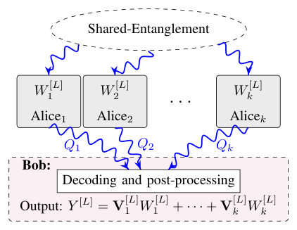
<figcaption class="paper-figure-caption"><b>Fig 1.</b> Fig. 1. A schematic diagram for a coding scheme under the noiseless quantum many-to-one model. Each Alicei encodes</figcaption>
</figure>
</div>

<p><strong>Summary.</strong> This paper develops advanced protocols for performing linear computations over a quantum network where multiple senders share entanglement. By allowing senders to precode inputs, they overcome limitations found in previous models, enabling the computation of more general transformations. Crucially, the authors prove that jointly computing several such functions can reduce the total required communication cost below the sum of individual costs.</p>
<p><strong>Why it may be interesting.</strong> While focused on abstract quantum communication complexity, the concepts of resource quantification (communication cost) and achieving super-additive benefits are fundamental theoretical tools applicable to optimizing complex quantum information processing tasks.</p>
<details>
<summary>Detailed structure</summary>
<p><strong>Main problem.</strong> The work addresses computing a general linear combination of classical data vectors ($Y = \sum V_i W_i$) over a noiseless quantum many-to-one network.</p>
<p><strong>Main result.</strong> They propose protocols that support a more general class of linear transformations than previously constrained, demonstrating subadditivity in the communication cost across multiple instances.</p>
<p><strong>Method.</strong> The approach involves encoding classical inputs into local quantum subsystems and transmitting them through an entangled quantum channel to a single receiver for joint measurement and post-processing.</p>
<p><strong>Model / system.</strong> The model is a noiseless quantum many-to-one network where $k$ senders share entanglement, and the computation aims to reconstruct a linear combination $\mathbf{Y}$ at Bob's location.</p>
<p><strong>Key observables.</strong> Communication cost (total number of transmitted qudits) and the resulting output vector $\mathbf{Y}$.</p>
<p><strong>Important parameters / regimes.</strong> Number of senders ($k$), number of instances ($L$), dimensions of input/output spaces ($\mathbb{F}^{m_i}, \mathbb{F}^m$).</p>
<p><strong>Assumptions / limitations.</strong> The computation is assumed to be zero-error, and the analysis builds upon prior work concerning constraints like the Strong Self-Orthogonality (SSO) condition.</p>
<p><strong>Figures summary.</strong> Figure 1 schematically illustrates the three stages of the coding scheme: entanglement distribution, local unitary encoding/transmission by $Alice_i$, and final measurement/post-processing at Bob.</p>
<p><strong>Paper structure.</strong> The paper progresses from defining the general linear combination problem to developing protocols that relax prior constraints (like SSO), demonstrating cost improvements, and finally proving subadditivity across multiple instances.</p>
</details>
<details>
<summary>Abstract</summary>
<p>In this work, we consider the problem of computing a linear combination over a noiseless quantum many-to-one network. There are $k$ senders, Alice$_1$, $\ldots$, Alice$_k$, and a single receiver, Bob. Each Alice$_i$ has a data vector $W_i \in \mathbb{F}^{m_i}$, where $\mathbb{F}$ is a finite field. Bob wants to compute the linear combination $Y = V_1 W_1 + V_2 W_2 + \cdots + V_k W_k \in \mathbb{F}^m$, where $V_i$ is an $m \times m_i$ matrix over $\mathbb{F}$. The senders transmit quantum states to Bob through a noiseless many-to-one quantum network, but they are not allowed to communicate with each other. The senders share entanglement among themselves, while Bob does not share this entanglement. They encode their classical information $W_i$, $i=1,\ldots,k$, into their local subsystems and transmit them to Bob so that he can recover $Y$ through a quantum measurement and subsequent post-processing. The N-Sum Box protocol proposed by Allaix et al. (2025) considers this problem under certain constraints on the linear combination and the distribution of the data vectors among the senders.   We present protocols that support the computation of a more general class of linear transformations by giving the senders access to more qudits and allowing them to judiciously precode their input symbols. The communication cost of our schemes is at most that of the best-known prior results in this area and is strictly lower in certain cases. Finally, we demonstrate that the communication cost is subadditive across instances. Specifically, we identify two linear functions for which the total cost of computing them individually is strictly larger than the cost of computing them jointly.</p>
</details>
<p><sub><a href="#top">↑ back to top</a></sub></p>

<p><a id="paper-2607.13570"></a></p>
<h3 id="tensor-network-decoding-under-inter-qubit-correlated-errors"><a href="http://arxiv.org/abs/2607.13570v1">Tensor Network decoding under inter-qubit correlated errors</a></h3>
<p><strong>Authors:</strong> Yue Yan, SiYing Wang, ZhiXin Xia, HanNuo Yuan, CanWei Shi, Xiang-Bin Wang<br>
<strong>Type:</strong> theory · <strong>Category:</strong> quantum information and computing · <strong>PDF:</strong> <a href="https://arxiv.org/pdf/2607.13570v1">https://arxiv.org/pdf/2607.13570v1</a><br>
<strong>Analysis basis:</strong> full PDF text, analyzed in chunks
<strong>Topic relevance:</strong> <code>methods for driven-dissipative</code> <strong>3/5</strong> · <code>correlated / nonlocal dissipation</code> <strong>1/5</strong></p>
<div class="figure-strip-hint">↔ Scroll figures horizontally</div>
<div class="paper-figures-scroll">
<figure class="paper-figure-card">
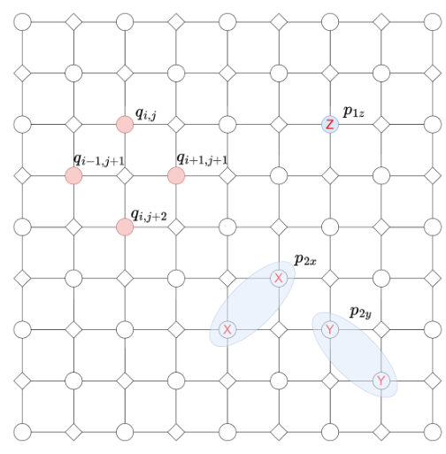
<figcaption class="paper-figure-caption"><b>Fig 1.</b> FIG. 1. An example of error model ENN. Diamonds represent measurement qubits, and circles represent data qubits. The four pink circles correspond to qi,j, qi−1,j+1, qi,j+2, qi+1,j+1, where the subscripts denote the coordinates of the qubits. For example, {qi+1,j+1, qi,j+2} is a pair of nearest-neighbor data qubits. The blue circle in the upper-right part indicates that an independent single-qubit Pauli Z error occurs at that data qubit, with probability p1z. The two pairs of nearest- neighbor data qubits enclosed by the blue ellipse in the lower- right part experience a correlated XX error and correlated YY error, with probabilities p2x and p2y, respectively.</figcaption>
</figure>
<figure class="paper-figure-card">
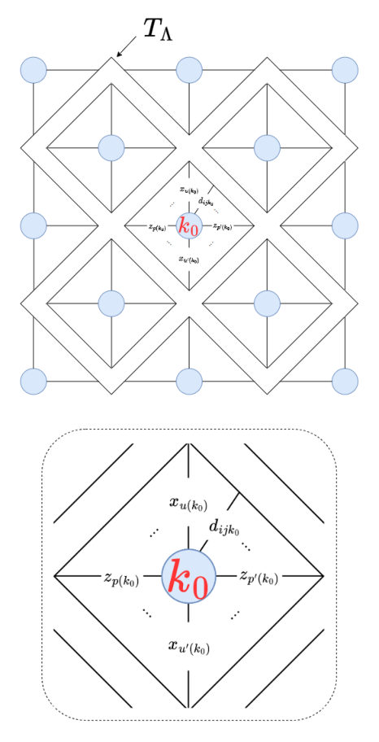
<figcaption class="paper-figure-caption"><b>Fig 2.</b> FIG. 2. The tensor network corresponding to the specific sur- face code with d = 3 under a general correlated error model. The dashed box shows a magnified view of the central re- gion of the tensor network. The central blue circle represents the tensor Fxu(k0),xu′(k0),zp(k0),zp′(k0),dijk0 (r′ k0), and the sur- rounding box represents a tensor TΛ of huge dimension. In the figure, only the indices dijk with k = k0 corresponding to the specific k0-th data qubit are labeled, the other dijk with k ̸= k0 indices are omitted.</figcaption>
</figure>
<figure class="paper-figure-card">
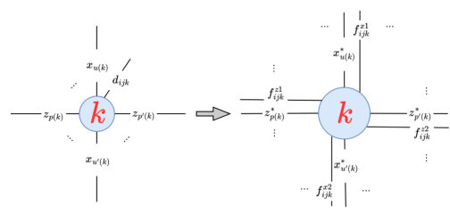
<figcaption class="paper-figure-caption"><b>Fig 3.</b> FIG. 3. Under reparametrization P1, P2 and elimi- nation, the right tensor Fxu(k),xu′(k),zp(k),zp′(k),dijk(r′ k) in Eq.23 is replaced by the left tensor Fx∗ u(k),x∗ u′(k),z∗ p(k),z∗ p′(k),fx1 ijk,fx2 ijk,fz1 ijk,fz2 ijk(r′ k).</figcaption>
</figure>
<figure class="paper-figure-card">
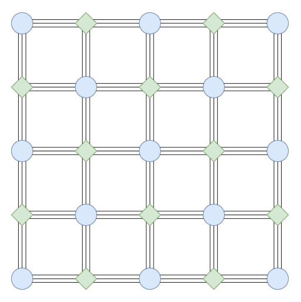
<figcaption class="paper-figure-caption"><b>Fig 4.</b> FIG. 4. The tensor network corresponding to the surface code with d = 3 under the ENN error model. The blue circles rep- resent the tensor Fx∗ u(k),x∗ u′(k),z∗ p(k),z∗ p′(k),fx1 ijk,fx2 ijk,fz1 ijk,fz2 ijk(r′ k).</figcaption>
</figure>
<figure class="paper-figure-card">
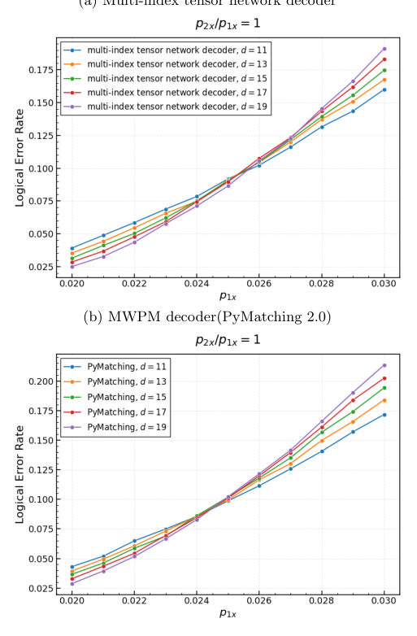
<figcaption class="paper-figure-caption"><b>Fig 5.</b> FIG. 5. Logical error rate as a function of p1x for the ENN error model with p1z = p1y = 0, p2z = p2y = 0 and p1x = p2x. (a) Results obtained by our multi-index tensor network decoder. (b) Results obtained by PyMatching 2.0. For our decoder, the tensor network contraction is performed with bond dimension χ = 12, and each data point is obtained from 100000 samples.</figcaption>
</figure>
</div>

<p><strong>Summary.</strong> This work addresses the difficulty of decoding quantum codes corrupted by correlated errors by developing an efficient multi-index tensor network approach. The authors overcome the challenges of non-factorizable probabilities and exponentially large tensors using index transformations and reparametrization techniques. They demonstrate that this new decoder achieves superior error correction thresholds compared to existing methods.</p>
<p><strong>Why it may be interesting.</strong> It provides a sophisticated computational tool (tensor networks) to analyze performance limits in quantum error correction under realistic, complex noise conditions that go beyond simple independent errors.</p>
<details>
<summary>Detailed structure</summary>
<p><strong>Main problem.</strong> The primary challenge is developing an efficient maximum likelihood decoder for quantum error correction under inter-qubit correlated noise models.</p>
<p><strong>Main result.</strong> The proposed multi-index tensor network construction achieves a higher finite-size threshold than the widely used MWPM decoder in numerical simulations.</p>
<p><strong>Method.</strong> The authors introduce additional binary indices and transformations to build a multi-index tensor network, followed by reparametrization and index classification to ensure efficient contraction of otherwise huge tensors.</p>
<p><strong>Model / system.</strong> The analysis focuses on decoding the 2D surface code when subjected to correlated Pauli errors, specifically modeling noise combining independent single-qubit errors with nearest-neighbor correlated two-qubit interactions (ENN model).</p>
<p><strong>Key observables.</strong> Finite-size threshold of the decoder; Coset probabilities $p(C(r'))$.</p>
<p><strong>Important parameters / regimes.</strong> Code distance ($d$); Noise parameters ($p_1, p_2$).</p>
<p><strong>Assumptions / limitations.</strong> The method relies on reparametrization and index classification to decompose high-dimensional tensors into efficiently contractible forms.</p>
<p><strong>Figures summary.</strong> Figures illustrate the Nearest-Neighbor Error Model (ENN) structure; Figure 6 compares the estimated finite-size threshold vs. code distance for the proposed decoder against PyMatching 2.0.</p>
<p><strong>Paper structure.</strong> The paper reviews surface codes and ML decoding, introduces the general correlated error model, details the multi-index tensor network construction using transformations, presents numerical simulations, and concludes.</p>
</details>
<details>
<summary>Abstract</summary>
<p>The maximum likelihood decoder based on tensor networks has proven highly successful for the 2D surface code, achieving the optimal decoding success rate. However, existing tensor network decoders are typically designed for independent single-qubit error models, and their performance under inter-qubit correlated error models remains unexplored. This is due to two major challenges. The first challenge lies in constructing the tensor network for correlated errors, since the same final Pauli error can arise from many different combinations of independent and correlated errors, preventing a direct factorization of the error probability. The second challenge is that even after a tensor network is constructed, it generally contains huge-dimensional tensors and is therefore not efficiently contractible. In this work, to address the first difficulty, we introduce additional binary indices and two transformations to construct a multi-index tensor network for maximum-likelihood decoding with correlated errors. To address the second difficulty, we use reparametrization, elimination, and index classification to decompose the huge-dimensional tensors into lower-dimensional tensors. This yields an efficiently contractible tensor network for error models satisfying the tractability conditions derived in this work. We perform numerical simulations for a representative correlated error model and show that the maximum-likelihood decoder implemented with our multi-index tensor network construction achieves a higher finite-size threshold than the widely used MWPM decoder.</p>
</details>
<p><sub><a href="#top">↑ back to top</a></sub></p>

<p><a id="paper-2607.13127"></a></p>
<h3 id="three-dimensional-non-foliated-fractional-quantum-hall-phases-with-irrational-anyons-in-twisted-van-der-waals-multilayers"><a href="http://arxiv.org/abs/2607.13127v1">Three-Dimensional Non-Foliated Fractional Quantum Hall Phases with Irrational Anyons in Twisted van der Waals Multilayers</a></h3>
<p><strong>Authors:</strong> Seyoung Jin, Hyeonseo Lim, Youngwook Kim, Gil Young Cho<br>
<strong>Type:</strong> theory · <strong>Category:</strong> strongly correlated electrons · <strong>PDF:</strong> <a href="https://arxiv.org/pdf/2607.13127v1">https://arxiv.org/pdf/2607.13127v1</a><br>
<strong>Analysis basis:</strong> full PDF text, analyzed in chunks
<strong>Topic relevance:</strong> <code>analog quantum simulation</code> <strong>3/5</strong> · <code>methods for driven-dissipative</code> <strong>1/5</strong></p>
<div class="figure-strip-hint">↔ Scroll figures horizontally</div>
<div class="paper-figures-scroll">
<figure class="paper-figure-card">
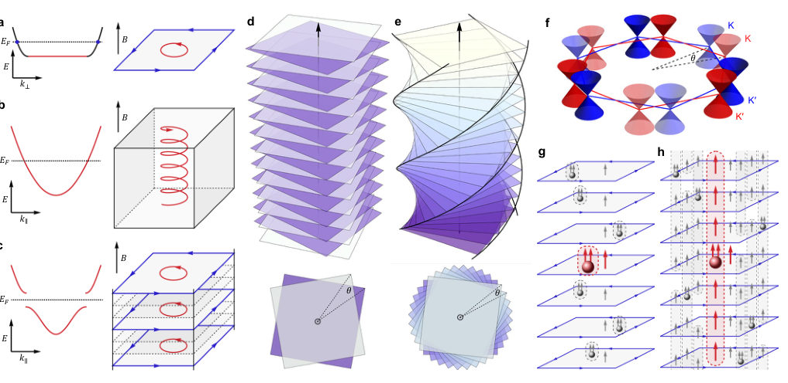
<figcaption class="paper-figure-caption"><b>Fig 1.</b> FIG. 1: Three-dimensional FQH phases in twisted multilayers. a, Quantum Hall effect in two dimensions. Under a uniform magnetic field B, the electrons follow cyclotron orbits (red arrow), and discrete Landau levels are formed [1, 6]. An isolated flat Landau level is required to realize a quantum Hall state (red line). b, In three dimensions, Landau levels generally disperse with the momentum k∥along the applied magnetic field, corresponding to cyclotron motion that spirals along the field direction (red arrow) [6, 17]. When a single Landau level crosses the Fermi energy (red curve), it results in a quasi-one-dimensional Fermi sea. c, When this band is partially filled, it has a density-wave...</figcaption>
</figure>
<figure class="paper-figure-card">
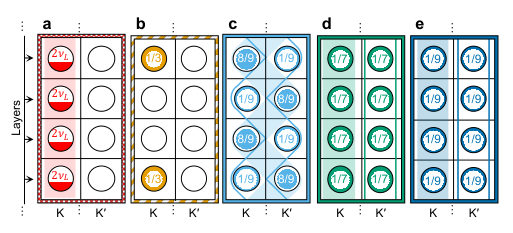
<figcaption class="paper-figure-caption"><b>Fig 2.</b> FIG. 2: Schematics of competing phases. Each black circle visualizes the lowest Landau level assigned to each layer (rows) and valley (columns). The circle is empty if the corresponding Landau level is unoccupied. Occupied Landau levels are indicated by partially filled circles, and their filling fractions are explicitly provided. A set of entangled Landau levels is indicated by either a shaded area or a solid line. a, Metallic valley-polarized SILC state. b, Staged Laughlin state. c–e, Interlayer coherent phases as a pair of generalized Halperin states and/or their particle-hole conjugates. Using the notation in which · ⊕· denotes a product state and PH(·) denotes particle-hole...</figcaption>
</figure>
<figure class="paper-figure-card">
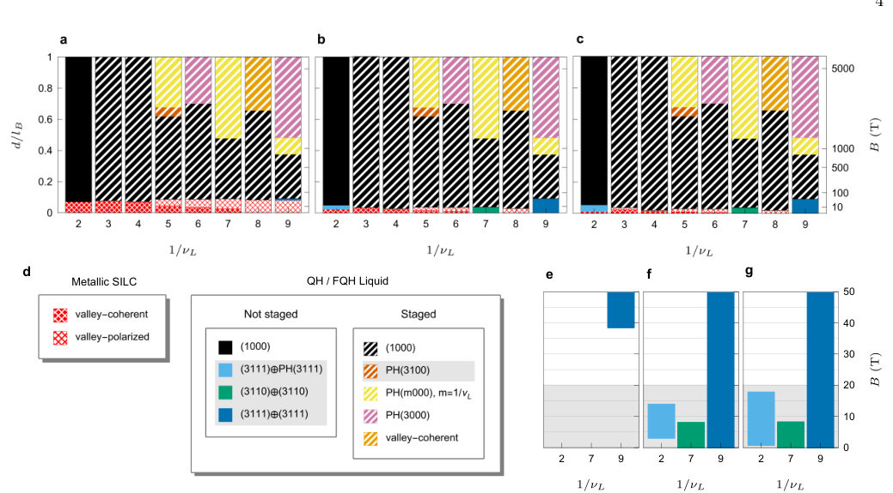
<figcaption class="paper-figure-caption"><b>Fig 3.</b> FIG. 3: Phase diagrams. a, Phase diagram for three-dimensional Bernal graphite (t⊥≈10 meV), b, alternating twisted graphene multilayer (t⊥≈1.78 meV), and c, helical twisted graphene multilayer (t⊥≈1.09 meV). d, Phase labels using the notation of Fig. 2. Interlayer-coherent FQH phases are highlighted in gray. Valley ordering and entanglement patterns are provided in Supplementary Note 3. e–g, Parameter regimes in which generalized Halperin states emerge at low magnetic fields for e, Bernal graphite, f, alternating twisted graphene multilayer, and g, helical twisted graphene multilayer. Experimentally accessible range of magnetic fields is highlighted in gray.</figcaption>
</figure>
</div>

<p><strong>Summary.</strong> The paper proposes that large-angle twisted van der Waals multilayers offer a viable route to achieving intrinsically three-dimensional fractional quantum Hall phases. By suppressing interlayer tunneling via twist angles, the system avoids metallic instabilities common in conventional 3D stacks. The resulting generalized Halperin states host exotic quasiparticles with irrational braiding statistics, opening new avenues for topological quantum information.</p>
<p><strong>Why it may be interesting.</strong> This work provides a concrete materials platform (twisted van der Waals layers) for realizing exotic topological matter predicted in strongly correlated electron systems, linking theoretical concepts of irrational anyons to solid-state physics.</p>
<details>
<summary>Detailed structure</summary>
<p><strong>Main problem.</strong> The primary challenge is realizing intrinsically three-dimensional (3D) fractional quantum Hall (FQH) phases that exhibit exotic properties like irrational anyons, moving beyond simple stacks of 2D liquids.</p>
<p><strong>Main result.</strong> Large-angle twisted van der Waals multilayers stabilize generalized Halperin liquid states exhibiting non-foliated 3D topological order with quasiparticles possessing irrational braiding statistics.</p>
<p><strong>Method.</strong> The study employs Monte Carlo calculations to compare the energies of a large set of competing trial wavefunctions, determining the ground state by minimizing the total energy functional.</p>
<p><strong>Model / system.</strong> The system is modeled using twisted van der Waals multilayers (like graphene) under a strong magnetic field. The key mechanism relies on large twist angles suppressing interlayer tunneling while preserving strong Coulomb interactions.</p>
<p><strong>Key observables.</strong> Topological order structure (non-foliated), quasiparticle braiding statistics (irrational vs. rational), and the relative stability of generalized Halperin states versus metallic phases.</p>
<p><strong>Important parameters / regimes.</strong> Large twist angles ($   heta \gtrsim 10^\circ$), small interlayer tunneling ($t_{\perp} \approx 1.78$ meV), and specific filling fractions like $
u_L = 1/7$.</p>
<p><strong>Assumptions / limitations.</strong> The analysis assumes that the suppression of coherent interlayer tunneling due to momentum mismatch is the critical factor stabilizing the novel liquid phases.</p>
<p><strong>Figures summary.</strong> Figures illustrate the transition from dispersive 3D Landau levels favoring density waves (Fig. 1) and present phase diagrams comparing different twisted graphene regimes based on magnetic field and filling fraction (Fig. 3).</p>
<p><strong>Paper structure.</strong> The paper first establishes the physical problem of achieving 3D FQH states, then details how large-angle twisting solves the metallic instability issue by suppressing tunneling, followed by extensive Monte Carlo calculations comparing candidate wavefunctions to identify the stable generalized Halperin liquid.</p>
</details>
<details>
<summary>Abstract</summary>
<p>Three-dimensional fractional quantum Hall phases offer a route to intrinsically higher-dimensional topological order beyond simple stacks of two-dimensional quantum Hall liquids. Such phases can exhibit non-foliated, intrinsically three-dimensional entanglement structures, exponentially large topological degeneracies and quasiparticles with irrational braiding statistics. Their microscopic realization has remained elusive because Landau quantization in three dimensions generally leaves dispersive one-dimensional bands, favoring metallic and density-wave states over incompressible fractional liquids. Here we show that large-angle twisted van der Waals multilayers provide a practical route around this obstruction. Large twist angles suppress coherent interlayer tunneling through momentum mismatch, while the atomic-scale layer separation preserves strong interlayer Coulomb interactions. Using Monte Carlo calculations to compare the energies of an extensive set of 862 competing trial wavefunctions, we find that generalized Halperin states with quantum coherence extending across multiple consecutive layers are stabilized. In experimentally accessible magnetic-field regimes, these states replace the metallic spontaneous-interlayer-coherent phases that dominate conventional untwisted graphite-like multilayers. The resulting liquids realize non-foliated fractional quantum Hall order closely related to fractonic topological order, hosting quasiparticles with rational electric charges but irrational braiding statistics. Their large topological degeneracy and non-rational statistical phases may offer unconventional resources for quantum information storage and processing. Our results establish twisted van der Waals multilayers as a realistic materials platform for three-dimensional fractional Hall matter beyond conventional two-dimensional quantum Hall systems.</p>
</details>
<p><sub><a href="#top">↑ back to top</a></sub></p>

<p><a id="paper-2607.14011"></a></p>
<h3 id="thermodynamic-and-electrical-transport-properties-of-the-half-heusler-plumbide-tbaupb"><a href="http://arxiv.org/abs/2607.14011v1">Thermodynamic and electrical transport properties of the half-Heusler plumbide TbAuPb</a></h3>
<p><strong>Authors:</strong> Abhinav Agarwal, Snehashish Chatterjee, Maciej J. Winiarski, Orest Pavlosiuk, Dorota A. Kowalska, Piotr Wisniewski, Dariusz Kaczorowski<br>
<strong>Type:</strong> both · <strong>Category:</strong> strongly correlated electrons · <strong>PDF:</strong> <a href="https://arxiv.org/pdf/2607.14011v1">https://arxiv.org/pdf/2607.14011v1</a><br>
<strong>Analysis basis:</strong> full PDF text, analyzed in chunks
<strong>Topic relevance:</strong> <code>spintronics-quantum-optics interface</code> <strong>3/5</strong></p>
<div class="figure-strip-hint">↔ Scroll figures horizontally</div>
<div class="paper-figures-scroll">
<figure class="paper-figure-card">
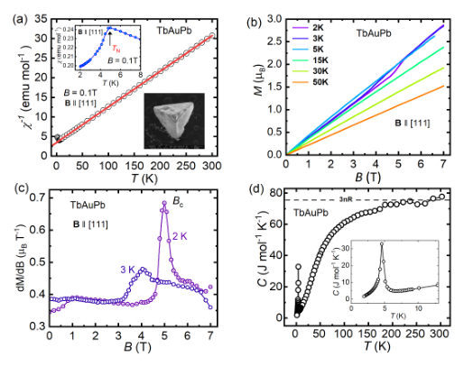
<figcaption class="paper-figure-caption"><b>Fig 1.</b> FIG. 1. (a) Temperature dependence of the inverse mag- netic susceptibility of single-crystalline TbAuPb measured in a magnetic field 0.1 T applied along the crystallographic [111] axis. The red line represents the Curie-Weiss fit. Upper in- set: the low-temperature variation of the magnetic suscepti- bility measured as in the main panel. The arrow indicates the AFM transition. Lower inset: SEM image of a single crystal of TbAuPb. (b) Magnetic field dependencies of the magne- tization in single-crystalline TbAuPb measured at different temperatures along the [111] direction. (c) Field derivative of the magnetization isotherms taken at T = 2 and 3 K. (d) Temperature variation the specific...</figcaption>
</figure>
<figure class="paper-figure-card">
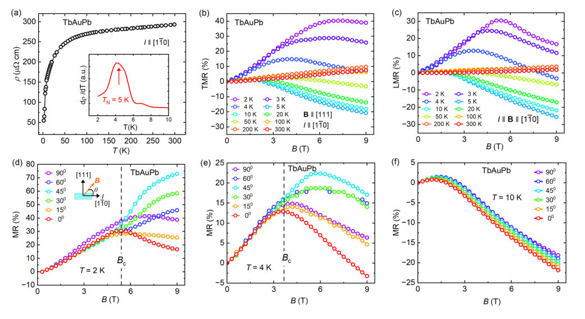
<figcaption class="paper-figure-caption"><b>Fig 2.</b> FIG. 2. (a) Temperature variation of the electrical resistivity of single-crystalline TbAuPb measured with electric current flowing along the [1¯10] direction. Inset: temperature derivative of the resistivity measured at low temperatures. (b) Transverse magnetoresistance isotherms of TbAuPb taken at various temperatures with electric current flowing along the [1¯10] direction and magnetic field applied along the [111] axis. (c) Longitudinal magnetoresistance isotherms of TbAuPb taken at various temperatures with electric current flowing along the [1¯10] direction and magnetic field applied parallel to the current. (d-f) Magnetoresistance of TbAuPb measured at 2 K, 4 K, and 10 K,...</figcaption>
</figure>
<figure class="paper-figure-card">
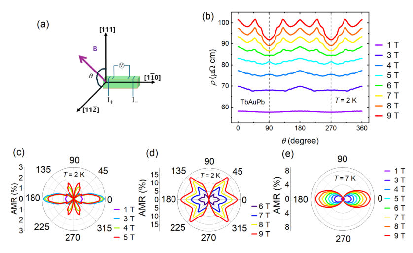
<figcaption class="paper-figure-caption"><b>Fig 3.</b> FIG. 3. (a) Mutual arrangement of magnetic field and electric current in measurements of the angular magnetoresistance in single-crystalline TbAuPb performed in transverse configuration. (b) Angular variations of the electrical resistivity of TbAuPb measured at 2 K as shown in panel (a) in different applied magnetic fields. For clarity, the subsequent curves were shifted upwards by a multiple of 5 µΩcm. (c) Polar plots of the angular magnetoresistance of TbAuPb measured as shown in panel (a) in the AFM state below the spin-reorientation transition. (d) Polar plots of the angular magnetoresistance of TbAuPb measured as shown in panel (a) in the AFM state above the spin-reorientation...</figcaption>
</figure>
<figure class="paper-figure-card">
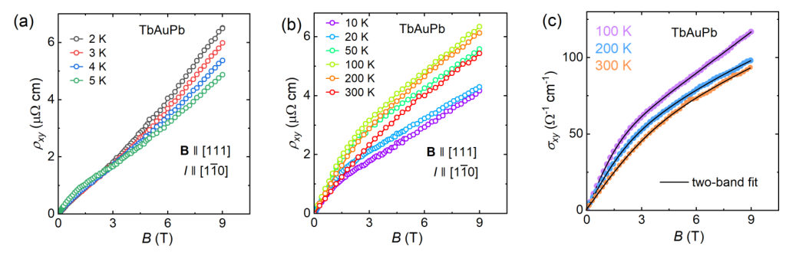
<figcaption class="paper-figure-caption"><b>Fig 4.</b> FIG. 4. (a) Hall resistivity of single-crystalline TbAuPb measured as a function of magnetic field at different temperatures in the AFM state with electric current flowing along the [1¯10] direction and magnetic field applied along the [111] axis. (b) Hall resistivity of TbAuPb measured at different temperatures as described in panel (a) in the paramagnetic state. (c) The Hall conductivity at high temperatures T &gt; 100 K. The solid black lines represent the two-band model fits (see Eq. 1) .</figcaption>
</figure>
<figure class="paper-figure-card">
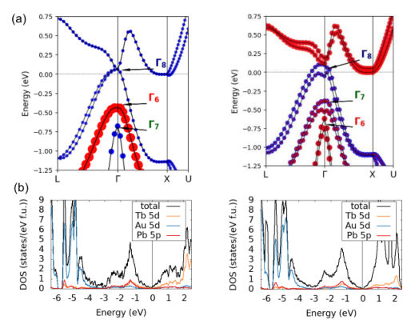
<figcaption class="paper-figure-caption"><b>Fig 5.</b> FIG. 5. (a) Electronic structure of nonmagnetic TbAuPb calculated using the MBJGGA potential (left) and ferromag- netic phase with M ∥[001] of TbAuPb calculated within the MBJGGA+U approach (right). Bands bearing p- and s-type character are marked with blue and red dots, respectively. (b) Total and partial density of states in TbAuPb calculated as specified in panel (a).</figcaption>
</figure>
</div>

<p><strong>Summary.</strong> This work investigates the coupled thermodynamic and electronic properties of the half-Heusler material TbAuPb. By combining single-crystal measurements with advanced DFT calculations, the authors demonstrate that transport properties are highly sensitive to the material's magnetic state. The findings suggest that TbAuPb is a semimetal whose topology can be tuned by external magnetic fields.</p>
<p><strong>Why it may be interesting.</strong> The strong coupling observed between charge transport anomalies (e.g., $ ext{AMR}$ symmetry changes) and magnetic phase transitions provides a rich platform for studying emergent quantum phenomena driven by magnetic order, relevant to correlated electron physics.</p>
<details>
<summary>Detailed structure</summary>
<p><strong>Main problem.</strong> The study investigates the interplay between magnetic ordering, electronic band topology, and charge transport properties in the half-Heusler plumbide TbAuPb.</p>
<p><strong>Main result.</strong> TbAuPb exhibits semimetallic behavior whose magnetotransport properties are highly sensitive to its magnetic state. Theoretical calculations suggest it is a band inverted semimetal in the non-magnetic state, becoming topologically trivial upon field-induced ferromagnetism.</p>
<p><strong>Method.</strong> The research combines experimental measurements (magnetization, specific heat, resistivity, magnetoresistance) with first-principles electronic structure calculations using DFT/MBJGGA+U functionals.</p>
<p><strong>Model / system.</strong> The physical system is the single-crystal half-Heusler compound TbAuPb, which possesses a cubic MgAgAs-type structure and exhibits intrinsic magnetism due to partially filled 4f orbitals on Tb. The analysis covers both antiferromagnetic (AFM) and field-induced ferromagnetic (FM) magnetic phases.</p>
<p><strong>Key observables.</strong> Electrical resistivity $
ho(T)$, magnetoresistance (MR), angular magnetoresistance ($    ext{AMR}$), Hall resistivity ($
ho_{xy}(B)$), specific heat $C(T)$, and electronic band structure/Density of States ($ ext{DOS}$) at the Fermi level.</p>
<p><strong>Important parameters / regimes.</strong> Antiferromagnetic transition temperature ($T_N = 5 	ext{ K}$), critical magnetic field ($B_c = 5 	ext{ T}$), carrier mobilities ($\mu_n, \mu_p$), and lattice parameters ($a = 6.745(4) 	ext{ Å}$).</p>
<p><strong>Assumptions / limitations.</strong> DFT calculations utilize GGA/MB-JGGA functionals with SOC included; the analysis models charge transport using a two-band model fit at high temperatures.</p>
<p><strong>Figures summary.</strong> Figures detail temperature dependence of magnetic susceptibility and specific heat, alongside $
ho(T)$, MR vs. angle ($    heta$), and electronic band structures comparing nonmagnetic and ferromagnetic states.</p>
<p><strong>Paper structure.</strong> The paper systematically presents structural confirmation (XRD/EDX), followed by thermodynamic measurements ($C(T)$), then detailed magnetotransport studies ($
ho(T)$, MR, AMR, Hall effect) across magnetic transitions, culminating in theoretical calculations of the electronic band structure and topological analysis.</p>
</details>
<details>
<summary>Abstract</summary>
<p>Structural, thermodynamic and electrical transport properties of TbAuPb were investigated on single crystals. The compound was found to crystallize with the cubic MgAgAs-type structure characteristic of half-Heusler materials. It orders antiferromagnetically at TN = 5 K and undergoes a transition into a different antiferromagnetic phase emerging in high magnetic fields. Electrical transport in TbAuPb exhibits a multiband character, with a predominance of hole-like carriers. Angular magnetoresistance evolves systematically with applied magnetic field and changes its symmetry near the spin-reorientation transition, highlighting strong coupling between the charge transport and the magnetic order. The results of first-principles calculations indicate that TbAuPb is a band inverted semimetal in the non-magnetic state, which becomes topologically trivial in the field-induced ferromagnetic state.</p>
</details>
<p><sub><a href="#top">↑ back to top</a></sub></p>

<p><a id="paper-2607.13734"></a></p>
<h3 id="microscopic-constitutive-theory-of-stress-overshoot-yielding-and-strain-hardening-in-amorphous-materials"><a href="http://arxiv.org/abs/2607.13734v1">Microscopic constitutive theory of stress overshoot, yielding, and strain hardening in amorphous materials</a></h3>
<p><strong>Authors:</strong> Ankit Singh, Valeriy V. Ginzburg, Alessio Zaccone<br>
<strong>Type:</strong> theory · <strong>Category:</strong> disordered systems and neural networks · <strong>PDF:</strong> <a href="https://arxiv.org/pdf/2607.13734v1">https://arxiv.org/pdf/2607.13734v1</a><br>
<strong>Analysis basis:</strong> full PDF text, analyzed in chunks
<strong>Topic relevance:</strong> <code>driven-dissipative phase transition</code> <strong>2/5</strong> · <code>non-equilibrium dynamics</code> <strong>2/5</strong> · <code>non-equilibrium universality</code> <strong>2/5</strong> · <code>Frenkel-Kontorova</code> <strong>1/5</strong> · <code>Keldysh / 2PI / non-Gaussian methods</code> <strong>1/5</strong> · <code>correlated / nonlocal dissipation</code> <strong>1/5</strong> · <code>methods for driven-dissipative</code> <strong>1/5</strong></p>
<div class="figure-strip-hint">↔ Scroll figures horizontally</div>
<div class="paper-figures-scroll">
<figure class="paper-figure-card">
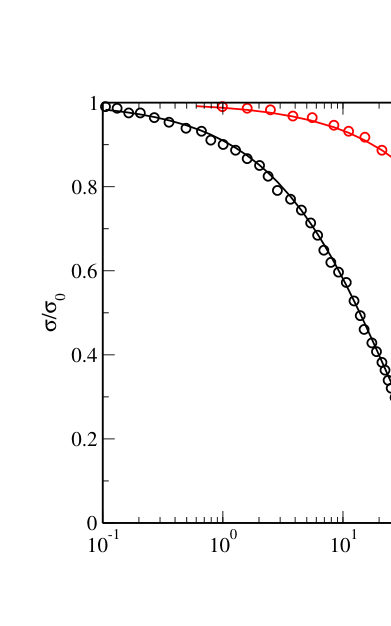
<figcaption class="paper-figure-caption"><b>Fig 1.</b> Figure 1: Plot of the normalized stress as a function of time at two temperatures, T = 643</figcaption>
</figure>
<figure class="paper-figure-card">
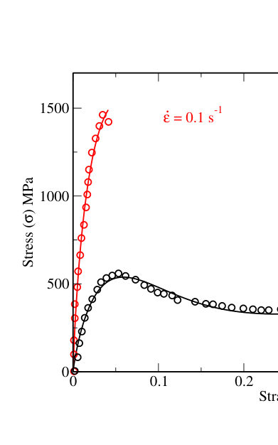
<figcaption class="paper-figure-caption"><b>Fig 2.</b> Figure 2: Stress–strain curves of a metallic glass at two strain rates, ˙ε = 0.1 and 0.005 s−1,</figcaption>
</figure>
<figure class="paper-figure-card">
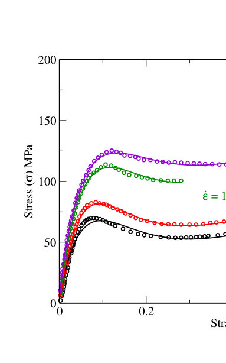
<figcaption class="paper-figure-caption"><b>Fig 3.</b> Figure 3: Stress-strain behavior of polycarbonate (PC) at temperature T = 298 K for</figcaption>
</figure>
<figure class="paper-figure-card">
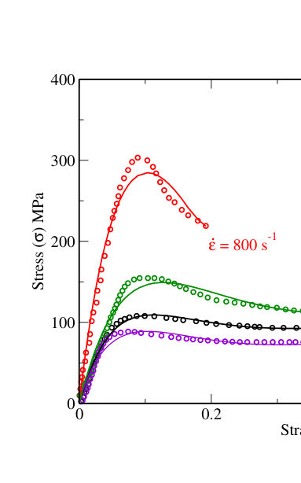
<figcaption class="paper-figure-caption"><b>Fig 4.</b> Figure 4: Stress-strain behavior of polymethyl methacrylate (PMMA) at temperature</figcaption>
</figure>
<figure class="paper-figure-card">
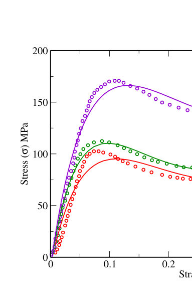
<figcaption class="paper-figure-caption"><b>Fig 5.</b> Figure 5: Stress-strain behavior of epoxy at temperature T = 298 K for three strain rates,</figcaption>
</figure>
</div>

<p><strong>Summary.</strong> This paper presents a microscopic constitutive theory to explain the nonlinear mechanical behavior of amorphous solids like metallic and polymer glasses. It successfully models the sequence from elastic loading through stress overshoot, yielding, and strain hardening by coupling nonaffine elasticity instability with structural relaxation dynamics. The results provide a unified theoretical framework validated against multiple experimental materials.</p>
<p><strong>Why it may be interesting.</strong> While focused on condensed matter mechanics, the underlying mathematical framework involving complex relaxation functions (stretched exponentials) and coupling between structural disorder (nonaffine effects) and macroscopic response shares conceptual links with modeling glassy dynamics in quantum or many-body systems.</p>
<details>
<summary>Detailed structure</summary>
<p><strong>Main problem.</strong> Developing a microscopic constitutive theory for the nonlinear deformation of amorphous materials, specifically addressing stress overshoot, yielding, and strain hardening.</p>
<p><strong>Main result.</strong> The model successfully reproduces the full stress-strain response across various glasses by unifying nonaffine elasticity instability with viscous structural relaxation dynamics. This establishes a unified framework linking these complex mechanical phenomena in amorphous solids.</p>
<p><strong>Method.</strong> The theory couples nonaffine elasticity (derived from free energy considerations) to irreversible many-body relaxation processes, modeling the total stress as a sum of elastic, viscous, and hardening components.</p>
<p><strong>Model / system.</strong> The study focuses on metallic and polymer glasses (e.g., polycarbonate, PMMA). The theory uses concepts like nonaffine displacements, strain-dependent coordination number, and stretched exponential relaxation forms to describe mechanical response.</p>
<p><strong>Key observables.</strong> Stress-strain response curve, stress overshoot magnitude, yielding point, steady plastic flow regime, and strain hardening behavior.</p>
<p><strong>Important parameters / regimes.</strong> Elastic modulus (E), viscosity ($\eta$), structural relaxation time ($ au_c$), viscous relaxation time ($ au_v$), and the stretched exponential exponent ($eta$).</p>
<p><strong>Assumptions / limitations.</strong> The total stress is assumed to be a linear sum of elastic, viscous, and hardening contributions. For polymers, finite chain extensibility is incorporated.</p>
<p><strong>Figures summary.</strong> Figures compare theoretical predictions (solid lines) with experimental data (symbols) for MG, PC, and PMMA across various strain rates and temperatures, illustrating the characteristic sequence from loading to flow/hardening.</p>
<p><strong>Paper structure.</strong> The paper develops the theory by defining components of stress ($\sigma_{el}, \sigma_{visc}, \sigma_{hard}$), deriving constitutive equations based on nonaffine elasticity and relaxation dynamics, and then applying these models to quantitatively reproduce experimental data for multiple amorphous materials across different deformation regimes.</p>
</details>
<details>
<summary>Abstract</summary>
<p>We develop a microscopic constitutive theory for the nonlinear deformation of metallic and polymer glasses based on nonaffine elasticity coupled to irreversible many-body relaxation. The theory predicts the full stress--strain response, from linear elasticity through stress overshoot and yielding to steady plastic flow. We show that stress overshoot originates from the competition between a nonaffine elastic instability induced by strain-driven loss of mechanical connectivity at the atomic/molecular level, and viscous dissipation associated with structural relaxation. For polymer glasses, finite chain extensibility naturally accounts for strain hardening at large deformation. The stretched-exponential relaxation exponent is obtained independently from stress or modulus relaxation measurements and provides the primary dynamical input to the theory. Using a small set of physically meaningful parameters, the model quantitatively reproduces experimental stress--strain curves for metallic glasses, polycarbonate, PMMA, and epoxy resins over a broad range of strain rates. These results establish a unified microscopic framework linking relaxation dynamics, yielding, plastic flow, and strain hardening in amorphous solids.</p>
</details>
<p><sub><a href="#top">↑ back to top</a></sub></p>

<p><a id="paper-2607.13722"></a></p>
<h3 id="towards-quantum-machine-learning-for-assessing-the-resilience-of-post-quantum-cryptography"><a href="http://arxiv.org/abs/2607.13722v1">Towards quantum machine learning for assessing the resilience of post-quantum cryptography</a></h3>
<p><strong>Authors:</strong> Jarosław A. Miszczak<br>
<strong>Type:</strong> theory · <strong>Category:</strong> quantum information and computing · <strong>PDF:</strong> <a href="https://arxiv.org/pdf/2607.13722v1">https://arxiv.org/pdf/2607.13722v1</a><br>
<strong>Analysis basis:</strong> full PDF text, analyzed in chunks
<strong>Topic relevance:</strong> <code>entanglement &amp; information structure</code> <strong>2/5</strong> · <code>methods for driven-dissipative</code> <strong>2/5</strong> · <code>Keldysh / 2PI / non-Gaussian methods</code> <strong>1/5</strong> · <code>analog quantum simulation</code> <strong>1/5</strong> · <code>driven-dissipative phase transition</code> <strong>1/5</strong></p>
<div class="figure-strip-hint">↔ Scroll figures horizontally</div>
<div class="paper-figures-scroll">
<figure class="paper-figure-card">
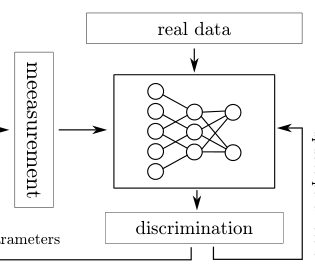
<figcaption class="paper-figure-caption"><b>Fig 1.</b> Fig. 1. Architecture of the proposed framework based on hybrid quantum-classical QGAN from the Qiskit Machine Learning library [4, 36]. The quantum generator is trained using the feedback from the classical discriminator to generate a quantum state suitable for representing the observed real data. Details of the quantum circuit construction are described in Section 3.3. Details of the classical discriminator are described in Fig. 3.</figcaption>
</figure>
<figure class="paper-figure-card">
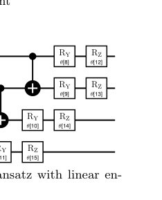
<figcaption class="paper-figure-caption"><b>Fig 2.</b> Fig. 2. Three types of ansatze used in this work as the basic blocks of the quantum generator. The circuits in this figure were built for four-qubit registers. We have (a) six, (b) eight, and (c) sixteen trainable parameters per layer. Using (a) and (c) we do not impose restrictions on the form of generated quantum states. For the case (b) the prepared quantum states will only have real amplitudes.</figcaption>
</figure>
<figure class="paper-figure-card">
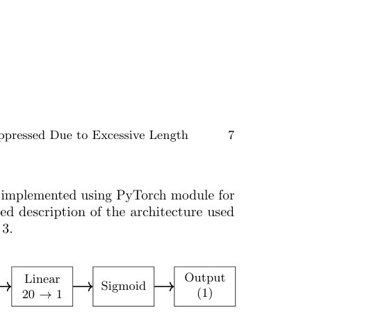
<figcaption class="paper-figure-caption"><b>Fig 3.</b> Fig. 3. Architecture of the artificial neural network used as the discriminator in the presented method. The scheme is based on the implementation described in [4,36].</figcaption>
</figure>
<figure class="paper-figure-card">
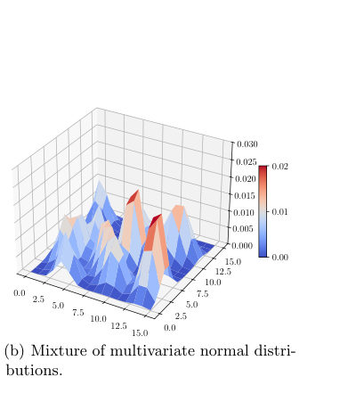
<figcaption class="paper-figure-caption"><b>Fig 4.</b> Fig. 4. Sample data from (a) the post-quantum hash-based source and (b) an artificially created mixture of multivariate normal distributions. (a) Probability distribution of pairs of four-bit words generated from the first byte of the SPHINCS+ signatures. A sample obtained using 213 signatures for a single plain text. (b) Probability distribution obtained as a mixture of 16 multivariate normal distributions, with parameters adjusted to (0, 15) × (0, 15) grid.</figcaption>
</figure>
<figure class="paper-figure-card">
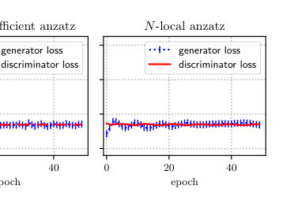
<figcaption class="paper-figure-caption"><b>Fig 5.</b> Fig. 5. Value of the loss function for the generator and the discriminator during the learning process for the PQC data.</figcaption>
</figure>
</div>

<p><strong>Summary.</strong> This paper proposes using Quantum Generative Adversarial Networks (QGANs) as a tool to test the security of Post-Quantum Cryptography. By training QGANs on cryptographic signature data, the authors demonstrate that near-term quantum hardware can learn these complex probability distributions. This suggests a viable pathway for utilizing quantum computation in cryptanalysis workflows.</p>
<p><strong>Why it may be interesting.</strong> While focused on cryptography, the underlying mechanism—using variational quantum circuits to model complex probability distributions—is highly relevant to simulating many-body quantum states or learning Hamiltonians in condensed matter physics.</p>
<details>
<summary>Detailed structure</summary>
<p><strong>Main problem.</strong> The primary goal is assessing the resilience of Post-Quantum Cryptography (PQC) protocols against potential attacks leveraging quantum computational capabilities.</p>
<p><strong>Main result.</strong> The study confirms that near-term hybrid quantum-classical methods, specifically using QGANs, possess sufficient capability to learn and approximate the complex probability distributions underlying PQC signatures.</p>
<p><strong>Method.</strong> A Quantum Generative Adversarial Network (QGAN) framework is employed. The generator prepares a quantum state representing the data distribution, while a classical discriminator network attempts to distinguish between real and generated samples.</p>
<p><strong>Model / system.</strong> The model utilizes QGANs, which are hybrid quantum-classical architectures. The core task involves loading the probability distribution of hash-based digital signatures (like SPHINCS+) into a quantum state $|\psi_t
angle$.</p>
<p><strong>Key observables.</strong> Kullback-Leibler divergence ($D_{KL}(P \parallel Q)$) is used to quantify the approximation quality between the true and generated distributions.</p>
<p><strong>Important parameters / regimes.</strong> The number of qubits ($n$), the structure/number of parameters in the quantum ansatz (e.g., N-local, real-amplitudes), and training loss metrics are key parameters.</p>
<p><strong>Assumptions / limitations.</strong> The approach is limited by current Noisy Intermediate-Scale Quantum (NISQ) technology; the results are based on simulation and do not constitute a full cryptanalytic attack.</p>
<p><strong>Figures summary.</strong> Figures illustrate the QGAN architecture, show sample data from PQC signatures, track training loss over epochs, and compare $D_{KL}$ divergence across different quantum ansatz types for both real and simple distributions.</p>
<p><strong>Paper structure.</strong> The paper introduces the problem of PQC security assessment using quantum methods. It details the QGAN methodology, applies it to SPHINCS+ signatures, compares various quantum circuit ansatze (N-local vs. real-amplitudes), analyzes convergence via loss functions, and concludes with the potential implications for cryptanalysis.</p>
</details>
<details>
<summary>Abstract</summary>
<p>The potential capabilities of quantum computers motivated the development of cryptographic protocols suitable for securing communication against adversaries with access to large fault-tolerant quantum computers. However, even though current quantum computers are limited in terms of size and precision, they can still be useful for finding loopholes and weaknesses in the post-quantum cryptographic protocols. In this work, we present an attempt to utilize the capabilities of Quantum Generative Adversarial Networks (QGANs), one of the promising architectures used in quantum machine learning, for this purpose. We describe an example application of QGAN architecture for the purpose of loading the probability distribution of the hash-based digital signatures into the memory of a quantum computer. Our results confirm that near-term hybrid quantum-classical methods possess capabilities required for this purpose. The presented approach can be used as a first step in the workflow, enabling the utilization of quantum computing for attacking post-quantum cryptographic primitives.</p>
</details>
<p><sub><a href="#top">↑ back to top</a></sub></p>

<p><a id="paper-2607.13448"></a></p>
<h3 id="deterministic-single-electron-trapping-on-solid-neon-using-engineered-dielectric-surface-geometry"><a href="http://arxiv.org/abs/2607.13448v1">Deterministic single-electron trapping on solid neon using engineered dielectric surface geometry</a></h3>
<p><strong>Authors:</strong> Kundan Surse, Eric Helgemo, Andrew Palmer, Md Serajum Monir, Lukas Delventhal, Thanh Nguyen, Maja Cassidy, Rajib Rahman<br>
<strong>Type:</strong> theory · <strong>Category:</strong> quantum information and computing · <strong>PDF:</strong> <a href="https://arxiv.org/pdf/2607.13448v1">https://arxiv.org/pdf/2607.13448v1</a><br>
<strong>Analysis basis:</strong> full PDF text, analyzed in chunks
<strong>Topic relevance:</strong> <code>QC/QI experiment</code> <strong>2/5</strong> · <code>Keldysh / 2PI / non-Gaussian methods</code> <strong>1/5</strong> · <code>analog quantum simulation</code> <strong>1/5</strong> · <code>driven-dissipative phase transition</code> <strong>1/5</strong> · <code>methods for driven-dissipative</code> <strong>1/5</strong></p>
<div class="figure-strip-hint">↔ Scroll figures horizontally</div>
<div class="paper-figures-scroll">
<figure class="paper-figure-card">
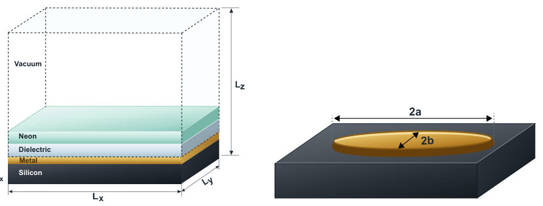
<figcaption class="paper-figure-caption"><b>Fig 1.</b> FIG. 1: Device geometry used in the simulations: (a) Simulation domain shown in dotted</figcaption>
</figure>
<figure class="paper-figure-card">

<figcaption class="paper-figure-caption"><b>Fig 2.</b> Fig. 2a and 2b shows the one-dimensional electrostatic potential along the central z-</figcaption>
</figure>
<figure class="paper-figure-card">
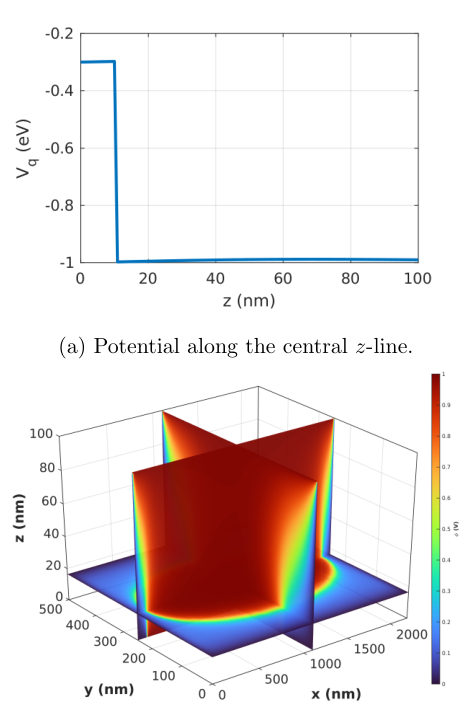
<figcaption class="paper-figure-caption"><b>Fig 3.</b> FIG. 2: Electrostatic potential landscape and ground-state wavefunction of the</figcaption>
</figure>
<figure class="paper-figure-card">
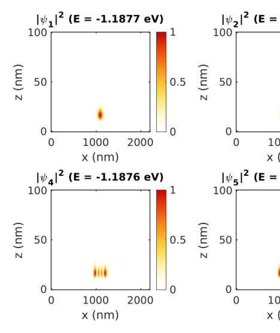
<figcaption class="paper-figure-caption"><b>Fig 4.</b> FIG. 3: Probability-density distributions of the first six eigenstates, showing the</figcaption>
</figure>
<figure class="paper-figure-card">
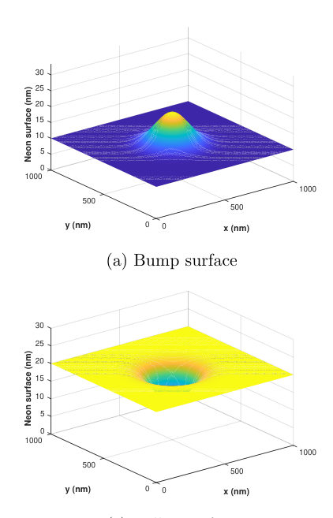
<figcaption class="paper-figure-caption"><b>Fig 5.</b> FIG. 4: Representative bump and valley surface geometries and their corresponding</figcaption>
</figure>
</div>

<p><strong>Summary.</strong> This paper proposes an advanced method to create reliable single-electron traps on solid neon, a promising platform for qubits. The authors use detailed 3D simulations to show that uncontrolled surface roughness causes trapping noise, but they demonstrate that selectively etching an underlying dielectric layer can deterministically engineer the potential minimum required for stable qubit operation.</p>
<p><strong>Why it may be interesting.</strong> This work directly addresses hardware realization challenges for solid-state quantum computing platforms by providing a theoretical blueprint for controlling nanoscale potential landscapes using material engineering.</p>
<details>
<summary>Detailed structure</summary>
<p><strong>Main problem.</strong> The primary challenge is achieving deterministic, controlled single-electron trapping on solid neon surfaces for use as a quantum qubit, overcoming issues caused by uncontrolled surface roughness.</p>
<p><strong>Main result.</strong> Engineered dielectric templates via selective etching provide a practical pathway to create reproducible potential minima that reliably capture electrons while suppressing unwanted surface bound states.</p>
<p><strong>Method.</strong> The authors employed large-scale 3D Schrödinger–Poisson simulations to model the quantum electrostatics of electron confinement in patterned solid neon structures.</p>
<p><strong>Model / system.</strong> The system is a levitating single-electron qubit on solid neon, modeled using a 3D finite-difference Schrödinger–Poisson framework. The potential landscape is controlled by engineering an underlying dielectric layer beneath the neon film.</p>
<p><strong>Key observables.</strong> Lowest-energy bound states ($E_n$), orbital splitting ($\Delta E = E_2 - E_1$), probability density $|\psi(\mathbf{r})|^2$, and wavefunction localization.</p>
<p><strong>Important parameters / regimes.</strong> Dielectric constant ($\varepsilon_r$), dielectric thickness ($H$), surface roughness parameters ($\sigma_{rms}$), and gate voltages (e.g., $V_{	ext{bottom}} = 1.0 	ext{ V}$).</p>
<p><strong>Assumptions / limitations.</strong> The model assumes the validity of the single-particle limit for initial analysis, though future work aims to include spin dynamics.</p>
<p><strong>Figures summary.</strong> Figures illustrate the comparison between random roughness effects (causing unintended trapping) and the controlled potential landscape achieved by etching a dielectric trench, showing localized wavefunctions in the engineered geometry.</p>
<p><strong>Paper structure.</strong> The paper progresses from establishing the promise of solid neon qubits to identifying surface morphology as the critical failure point. It then details simulations comparing uncontrolled roughness vs. engineered dielectric templates, culminating in demonstrating deterministic trapping via selective etching.</p>
</details>
<details>
<summary>Abstract</summary>
<p>Levitating electron qubit on the surface of solid neon has recently emerged as a promising and intrinsically noise-resilient platform for quantum information processing. Their ultra-clean, inert environment suppresses conventional decoherence pathways associated with lattice disorder, charge traps, and nuclear-spin baths that limit coherence in semiconductor qubits. Yet, uncontrolled surface features such as bumps, valleys, and electrode-defined gaps can bind electrons unintentionally, contributing charge noise and inducing spin-orbit coupling mediated decoherence. To address this challenge, we propose an engineered interface in which a dielectric layer is deposited beneath the solid neon to provide an atomically smooth template, eliminating surface-roughness induced trapping. By selectively etching this dielectric layer at desired qubit locations, deterministic potential minima can be engineered to reliably capture electrons while suppressing unwanted surface bound states. We perform large-scale Schrodinger and Poisson simulation to compare the existing and proposed strategies of electron trapping on neon, obtaining good agreement with recent experimental measurements.</p>
</details>
<p><sub><a href="#top">↑ back to top</a></sub></p>

<p><a id="paper-2607.13145"></a></p>
<h3 id="a-robust-and-modular-cesium-magneto-optical-trap-using-diverging-laser-beams"><a href="http://arxiv.org/abs/2607.13145v1">A robust and modular cesium magneto-optical trap using diverging laser beams</a></h3>
<p><strong>Authors:</strong> Paola Luna, Kenneth Nakasone, Andrei Zhukov, Philip Wondrak, Brian P. Anderson, Benjamin F. Kanzer, Cristian D. Panda<br>
<strong>Type:</strong> experiment · <strong>Category:</strong> other · <strong>PDF:</strong> <a href="https://arxiv.org/pdf/2607.13145v1">https://arxiv.org/pdf/2607.13145v1</a><br>
<strong>Analysis basis:</strong> full PDF text, analyzed in chunks
<strong>Topic relevance:</strong> <code>QC/QI experiment</code> <strong>2/5</strong> · <code>analog quantum simulation</code> <strong>1/5</strong> · <code>interference shaping light</code> <strong>1/5</strong> · <code>quantum optics experiment</code> <strong>1/5</strong></p>
<div class="figure-strip-hint">↔ Scroll figures horizontally</div>
<div class="paper-figures-scroll">
<figure class="paper-figure-card">
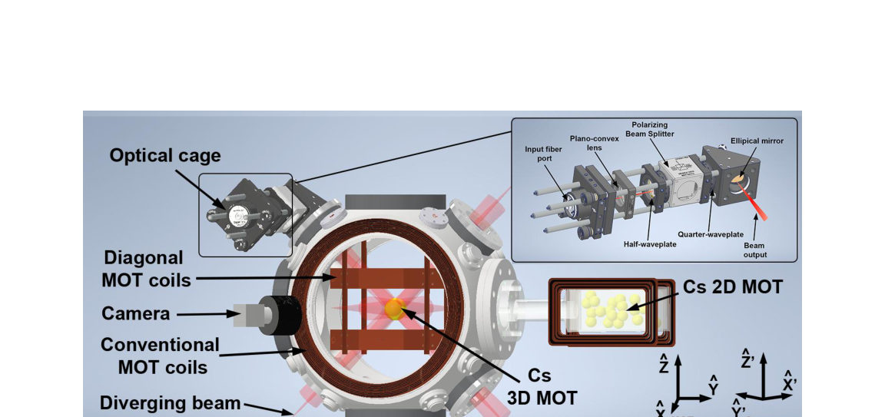
<figcaption class="paper-figure-caption"><b>Fig 1.</b> Fig 1. Optical, magnetic and vacuum systems. The vacuum chamber has four optical cages attached to each diagonal viewport (for simplicity, only the top-left cage is shown) and two optical cages on a breadboard (not shown) for MOT laser delivery. The compact and modular delivery cage system provides position adjustment of all optical components. We create 3D MOTs using two different sets of electromagnetic coils: “Conventional MOT coils” have the principal axis of the quadrupole magnetic-field aligned to one of the laser beams and “Diagonal MOT coils” have the principal axis of the quadrupole magnetic-field aligned along Z, at 45 degrees from two laser axes and 90 degrees from the third. The...</figcaption>
</figure>
<figure class="paper-figure-card">
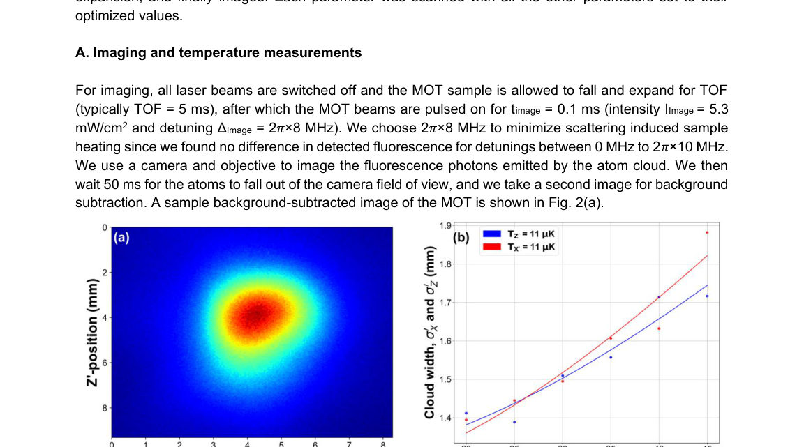
<figcaption class="paper-figure-caption"><b>Fig 2.</b> Fig. 2. Temperature measurement procedure. We capture a camera image of the MOT cloud (a), we fit Gaussians along the X&#x27; and Z&#x27; axes to find the corresponding widths of the atom sample. This is repeated at different TOFs and a dataset (b) is generated. We fit the data corresponding to each axis to Eq. (1) to compute the temperatures. Each background-subtracted fluorescence image is analyzed in two ways. First, we integrate the camera signal over a rectangle that encloses the atom cloud and convert this signal into atom number using an independent calibration. For this calibration, a laser beam was split between a calibrated power meter and the camera. We used the measured power and the...</figcaption>
</figure>
<figure class="paper-figure-card">
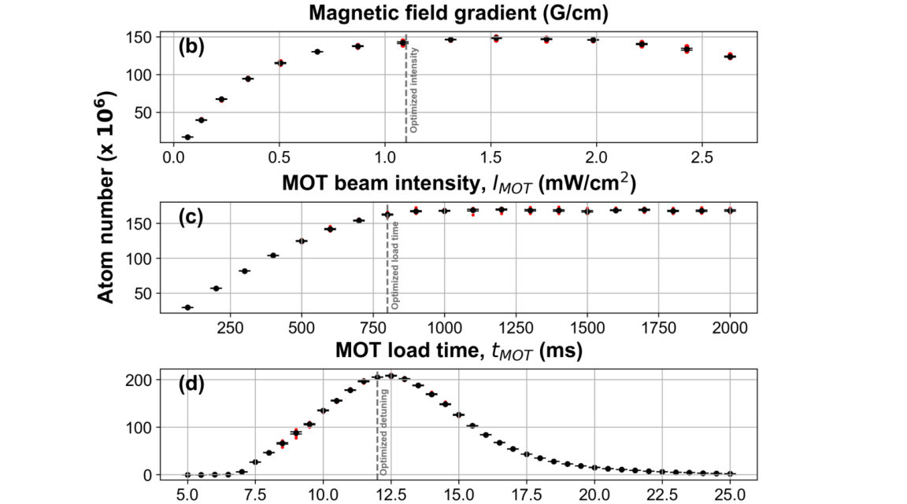
<figcaption class="paper-figure-caption"><b>Fig 3.</b> Fig 3. Optimizing diverging-beam 3D MOT parameters for high atom number. Scans of 3D MOT magnetic field gradient, intensity, load time and detuning. Each data point (black) was averaged over ten measurements (red dots). The error bars (black) indicate ±1σ, where σ is the standard error. The dashed vertical lines (gray) indicate the typical optimized values which were kept constant while scanning all other parameters. Fig. 3(a) shows that the atom number increases with larger magnetic field gradients up to an optimum value of ~6 G/cm. We observe that higher values of the magnetic field gradient cause the MOT to become unstable, resulting in large shot-to-shot fluctuations and decreased atom...</figcaption>
</figure>
<figure class="paper-figure-card">
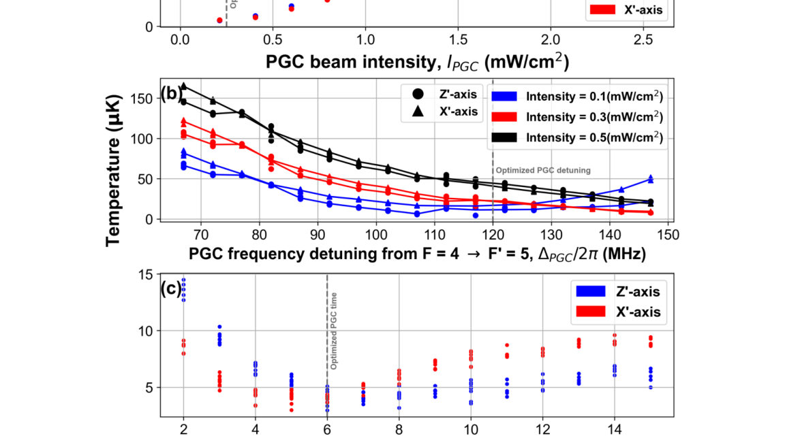
<figcaption class="paper-figure-caption"><b>Fig 4.</b> Fig. 4. Optimizing diverging-beam MOT parameters during PGC to achieve low temperatures. Scans of PGC beam intensity, frequency detuning, and time. The dashed lines (gray) indicate the optimized values chosen for each parameter, which were kept constant while scanning all the other parameters. Fig. 4(a) shows a sharp decrease in temperature when increasing laser beam intensity up to an optimum of IPGC = ~0.25 mW/cm2. In Fig. 4(b), we scan the laser detuning for three different values of laser beam intensity and observe the optimum trap laser detuning to be ΔPGC = 2𝜋×120 MHz for the lower intensity of 0.1 mW/cm2. We observe that larger detunings minimize the atom temperature for higher laser...</figcaption>
</figure>
<figure class="paper-figure-card">
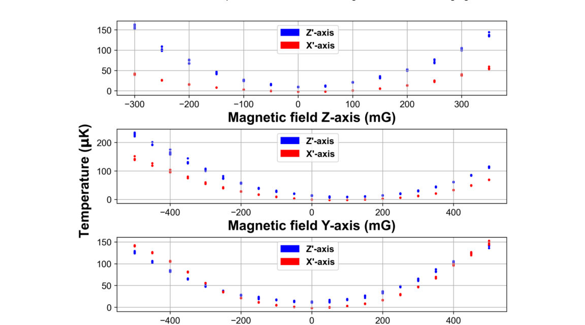
<figcaption class="paper-figure-caption"><b>Fig 5.</b> Fig. 5. Optimization of atom sample temperature after PGC vs. compensation magnetic field. Magnetic fields along the X, Y, and Z axes are varied by changing the current of each corresponding compensation coil to optimize atom sample temperature after PGC. Each parameter was scanned with all the other parameters set to their optimized values. D. Long-term MOT atom number and temperature stability Consistent, long-term operation of the experimental system is critical for applications in fundamental gravitational physics, where small signals must be averaged over long integration times. Furthermore, quantum sensing systems must remain stable despite large variations in environmental parameters...</figcaption>
</figure>
</div>

<p><strong>Summary.</strong> The authors present an advanced, modular Magneto-Optical Trap (MOT) designed specifically for high-precision quantum sensing using cesium atoms. By implementing diverging laser beams and a compact optical cage system, they achieve stable trapping of millions of atoms at temperatures below $10 \mu	ext{K}$. This demonstrates a significant engineering improvement over conventional MOTs, enhancing reliability for future quantum applications.</p>
<p><strong>Why it may be interesting.</strong> This work directly addresses practical engineering challenges in quantum sensing platforms—namely, mechanical robustness and optical coupling efficiency—by modifying the standard MOT setup. The use of diverging beams is a key technical advance for field deployment.</p>
<details>
<summary>Detailed structure</summary>
<p><strong>Main problem.</strong> To develop a robust, modular Magneto-Optical Trap (MOT) optimized for high-precision quantum sensing and metrology applications.</p>
<p><strong>Main result.</strong> The developed MOT successfully traps large numbers of cesium atoms ($\sim 4	imes10^8$) with low temperatures ($<10 \mu	ext{K}$) while maintaining long-term stability, even when using novel diverging laser beam geometries.</p>
<p><strong>Method.</strong> The system employs a modular optical cage setup and utilizes diverging cooling laser beams instead of conventional collimated beams to improve robustness against reflections. Cooling is optimized via Polarization-Gradient Cooling (PGC).</p>
<p><strong>Model / system.</strong> The physical platform is a Cesium Magneto-Optical Trap (MOT) adapted for stability and modularity. It can operate in standard or non-conventional diagonal magnetic field geometries.</p>
<p><strong>Key observables.</strong> Atom number ($ ext{Cs}$ atoms), temperature ($T$), spatial widths ($\sigma_{X'}, \sigma_{Z'}$), and long-term stability over $>50$ hours.</p>
<p><strong>Important parameters / regimes.</strong> Optimal MOT parameters include gradients near $6 	ext{ G/cm}$, intensity $\sim 1.1 	ext{ mW/cm}^2$, and detuning at $2\pi 	imes 12 	ext{ MHz}$. PGC duration is optimized around $6 	ext{ ms}$.</p>
<p><strong>Assumptions / limitations.</strong> The accuracy of temperature measurement via Time-of-Flight (TOF) method is limited below $10 \mu	ext{K}$; the diagonal MOT configuration is noted to be highly sensitive to parameter drift.</p>
<p><strong>Figures summary.</strong> Figures illustrate the overall setup using six optical cages, show temperature measurements via TOF fitting, detail optimization scans for 3D MOT parameters and PGC duration, and track long-term stability over $>52$ hours.</p>
<p><strong>Paper structure.</strong> The paper details the motivation (need for robust MOTs), presents the novel diverging beam/modular optical system, optimizes loading and cooling stages (PGC), validates performance through temperature and atom number measurements, and concludes by testing stability in both conventional and non-conventional geometries.</p>
</details>
<details>
<summary>Abstract</summary>
<p>Magneto-optical traps (MOTs) are a workhorse technology for neutral-atom quantum sensing, simulation, and computing. Here, we demonstrate a MOT optimized for inertial quantum sensing and precision metrology applications. Our MOT traps $4\times10^8$ cesium (Cs) atoms in a robust, modular system that achieves stable operation through two design features: (1) we use diverging cooling laser beams to reduce unwanted reflections and (2) optical elements are mounted in a fiber-coupled, compact, and modular cage rigidly attached to the vacuum chamber. Following polarization-gradient cooling (PGC), the system produces atom samples with temperatures below 10 $μ$K, similar to those achieved in conventional MOTs that use collimated laser beams. In addition, we observe trapping of $2\times10^7$ Cs atoms in a non-conventional MOT geometry, where the cooling laser beams are diagonal to the principal axis of the quadrupole magnetic field.</p>
</details>
<p><sub><a href="#top">↑ back to top</a></sub></p>

<p><a id="paper-2607.13725"></a></p>
<h3 id="an-exact-algorithm-for-un-matrix-models-in-the-gauge-invariant-singlet-sector"><a href="http://arxiv.org/abs/2607.13725v1">An exact algorithm for U(N) matrix models in the gauge-invariant singlet sector</a></h3>
<p><strong>Authors:</strong> Enrico M. Brehm, Jean Cazalis<br>
<strong>Type:</strong> theory · <strong>Category:</strong> other · <strong>PDF:</strong> <a href="https://arxiv.org/pdf/2607.13725v1">https://arxiv.org/pdf/2607.13725v1</a><br>
<strong>Analysis basis:</strong> full PDF text, analyzed in chunks
<strong>Topic relevance:</strong> <code>analog quantum simulation</code> <strong>2/5</strong> · <code>Keldysh / 2PI / non-Gaussian methods</code> <strong>1/5</strong> · <code>entanglement &amp; information structure</code> <strong>1/5</strong> · <code>non-equilibrium dynamics</code> <strong>1/5</strong></p>
<div class="figure-strip-hint">↔ Scroll figures horizontally</div>
<div class="paper-figures-scroll">
<figure class="paper-figure-card">
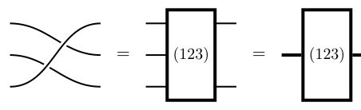
<figcaption class="paper-figure-caption"><b>Fig 1.</b> Figure 2: Graphical representation of the permutation tensor σ = (123), or written out σj1j2j3 i1i2i3 = δj2 i1 δj3 i2 δj1 i3 .</figcaption>
</figure>
<figure class="paper-figure-card">
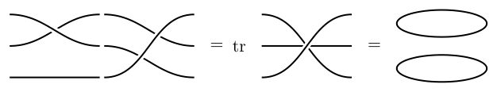
<figcaption class="paper-figure-caption"><b>Fig 2.</b> Figure 3: Graphical representation of the contraction of (123) and (1)(23). The result is (13)(2); taking the trace yields two loops, each corresponding to a trace in the defining representation of U(N) and contributing a factor of N.</figcaption>
</figure>
<figure class="paper-figure-card">
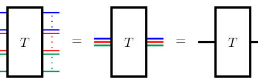
<figcaption class="paper-figure-caption"><b>Fig 3.</b> Figure 4: Graphical representation of a tensor T J I ∈End((CN)⊗n). The right legs carry the lower indices I, while the left legs carry the upper indices J. Different colors represent different matrix species.</figcaption>
</figure>
<figure class="paper-figure-card">
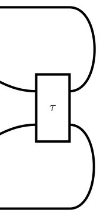
<figcaption class="paper-figure-caption"><b>Fig 4.</b> Figure 5: Graphical representation of the contraction tr((PR ⊗PS) · τ).</figcaption>
</figure>
<figure class="paper-figure-card">
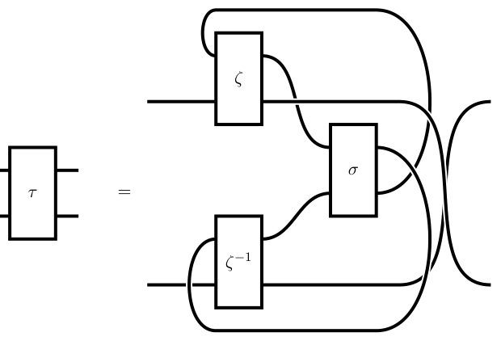
<figcaption class="paper-figure-caption"><b>Fig 5.</b> Figure 6: Graphical representation the permutation τ and loop count k. It shows the contraction that leads to Nkτ. Each closed loop in the contraction contributes a factor of N.</figcaption>
</figure>
</div>

<p><strong>Summary.</strong> This paper introduces an exact, group-theoretically derived algorithm for calculating observables in U(N) matrix models within their physically relevant gauge-invariant sector. By mapping the problem onto representations of the symmetric group, it provides explicit polynomial formulas for finite-N dynamics. This opens a new computational window into non-planar regimes of holographic quantum gravity models.</p>
<p><strong>Why it may be interesting.</strong> While highly abstract, the techniques developed—using representation theory (Schur functions, symmetric groups) to solve complex many-body quantum field theories in a finite-N limit—are analogous to advanced methods used in strongly correlated electron systems or lattice gauge theories.</p>
<details>
<summary>Detailed structure</summary>
<p><strong>Main problem.</strong> The primary goal is developing an exact, systematic algorithm for computing observables within the gauge-invariant singlet sector of bosonic U(N) matrix models.</p>
<p><strong>Main result.</strong> The authors present a group-theoretic framework that yields closed-form polynomial expressions in N for these matrix elements, allowing access to finite-N dynamics previously difficult to compute.</p>
<p><strong>Method.</strong> The method relies on decomposing the Hilbert space using Schur polynomials and evaluating matrix elements via group-theoretic reductions involving cosets and character sums of the symmetric group.</p>
<p><strong>Model / system.</strong> The system is a bosonic U(N) matrix model, fundamental in describing M-theory and D-brane dynamics through the gauge/gravity duality. The Hamiltonian involves quadratic and quartic terms in the matrices.</p>
<p><strong>Key observables.</strong> Hamiltonian matrix elements, correlation functions of gauge-invariant observables (singlets), and the low-lying energy spectrum.</p>
<p><strong>Important parameters / regimes.</strong> The rank N of the gauge group, the coupling constant g, and the mass parameter m.</p>
<p><strong>Assumptions / limitations.</strong> The analysis is restricted to the gauge-invariant singlet sector. A major limitation noted is the difficulty in computing restricted characters for multi-matrix extensions.</p>
<p><strong>Figures summary.</strong> Not specified by detailed notes; general structure involves mathematical derivations related to tensor decomposition and group theory.</p>
<p><strong>Paper structure.</strong> The paper builds from establishing the physical context (M-theory/D-branes) to defining the singlet basis using Schur polynomials, deriving explicit formulas for gauge generators, calculating correlators via Wick's theorem, and finally presenting the general algorithm structure.</p>
</details>
<details>
<summary>Abstract</summary>
<p>Matrix models appear as fundamental descriptions of M-theory and D-brane dynamics, and via the gauge/gravity duality their gauge-invariant, or singlet, sector describes the purely gravitational degrees of freedom in the holographic dual. We present a new exact algorithm for computing observables of bosonic U(N) matrix models in the gauge-invariant singlet sector. This sector is spanned by an orthogonal basis of Schur polynomials (for a single matrix) and restricted Schur polynomials (for multiple matrices), which diagonalizes the free Hamiltonian and provides a natural truncation of the Hilbert space by excitation number. Matrix elements of the interaction Hamiltonian, or any gauge-invariant observable, are evaluated through a group-theoretic reduction to cosets and double cosets of suitable subgroups of the symmetric group, together with character sums on the symmetric group. The resulting entries are closed-form polynomials in the gauge-group rank N, assembled from group-theoretic data that are precomputed once and can be reused for any N and any coupling constants. We validate the one-matrix implementation against the exact mapping to N non-interacting fermions, demonstrating rapid convergence of the low-lying spectrum with the cutoff. The multi-matrix extension is outlined; its main bottleneck is the computation of restricted characters of the symmetric group, for which no algorithm comparable to the Murnaghan--Nakayama rule is currently known. The framework gives direct access to finite-N, finite-coupling dynamics of gauge-invariant states and opens a new computational window on the non-planar regime of holographic matrix models.</p>
</details>
<p><sub><a href="#top">↑ back to top</a></sub></p>

<p><a id="paper-2607.13641"></a></p>
<h3 id="the-potential-of-quantum-computers-for-particle-image-velocimetry"><a href="http://arxiv.org/abs/2607.13641v1">The potential of quantum computers for Particle Image Velocimetry</a></h3>
<p><strong>Authors:</strong> Philipp Pfeffer, Theo Käufer, Julia Ingelmann, Christian Cierpka, Jörg Schumacher<br>
<strong>Type:</strong> both · <strong>Category:</strong> quantum information and computing · <strong>PDF:</strong> <a href="https://arxiv.org/pdf/2607.13641v1">https://arxiv.org/pdf/2607.13641v1</a><br>
<strong>Analysis basis:</strong> full PDF text, analyzed in chunks
<strong>Topic relevance:</strong> <code>QC/QI experiment</code> <strong>2/5</strong> · <code>entanglement &amp; information structure</code> <strong>1/5</strong> · <code>methods for driven-dissipative</code> <strong>1/5</strong> · <code>non-equilibrium dynamics</code> <strong>1/5</strong></p>
<div class="figure-strip-hint">↔ Scroll figures horizontally</div>
<div class="paper-figures-scroll">
<figure class="paper-figure-card">
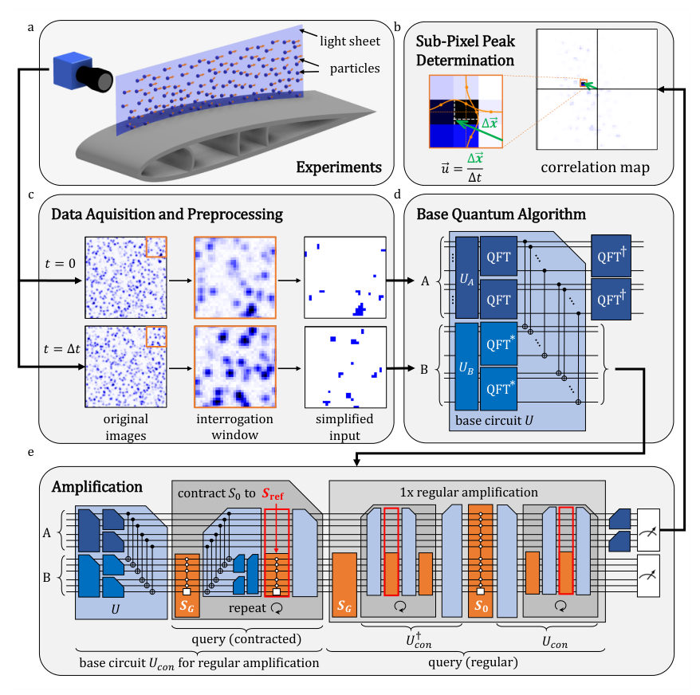
<figcaption class="paper-figure-caption"><b>Fig 1.</b> Fig. 1 Building blocks and workflow of Quantum-based Particle Image Velocimetry. (a) The input data for the algorithm, which are obtained from PIV experiments, are tracer particle images. Here, they are obtained for a flow around a wing. (b) Evaluation of the peak of the correlation map Cmap, which determines the velocity field vector in each local interrogation window to sub-pixel accuracy. (c) Preprocessing of PIV snapshots by filtering to binary input images. For an N × N interrogation window, the N pixels with the largest light intensities are taken. (d) Image loading on separate qubit registers A and B followed by the Fourier-based cross-correlation evaluation. We apply a...</figcaption>
</figure>
<figure class="paper-figure-card">
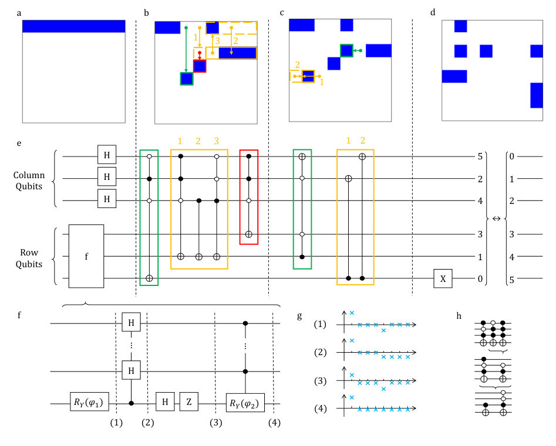
<figcaption class="paper-figure-caption"><b>Fig 2.</b> Fig. 2 Efficient quantum state preparation for binary images with zero mean. The procedure is illustrated for clarity by n = 3 qubits in both registers for the N = 8 brightest pixels in an 8 × 8 pixel image. (a)-(d) Stepwise iteration to the final image and corresponding quantum circuit blocks in panel (e). Panel (e) shows the gates for the example target image in panel (d). The individual pixel shifts and the corresponding multi-controlled NOT (mcNOT) gates are boxed in the same color as in panels (b) and (c). Panel (a) shows the initial image, which has a zero mean. (f) Details of the circuit diagram for a binary and zero-mean state on the row qubits in panel (e). (g) Illustration of the...</figcaption>
</figure>
<figure class="paper-figure-card">
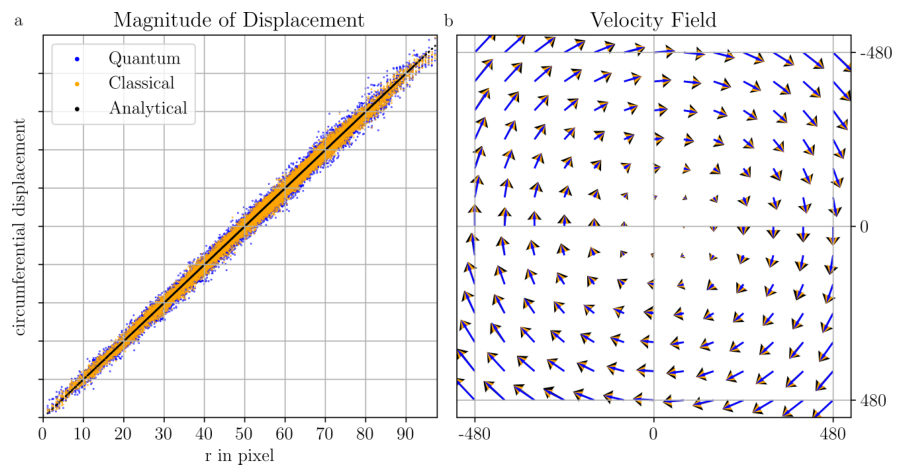
<figcaption class="paper-figure-caption"><b>Fig 3.</b> Fig. 3 Evaluation of the 4th PIV challenge data (case F) with the QuPIV pipeline via a comparison of the analytical solution (black), classical PIV with binary images (orange) and the full QuPIV pipeline with additional contracted amplification and sampling. (a) All 1212 displacement amplitudes based on their radial position. The circumferential displacement is normalized such that it aligns with the radial pixel displacement from the image center. (b) Velocity vector field comparison where every 10th vector is depicted based on its distance from the image center in pixel. Parameters are given in the main text.</figcaption>
</figure>
<figure class="paper-figure-card">
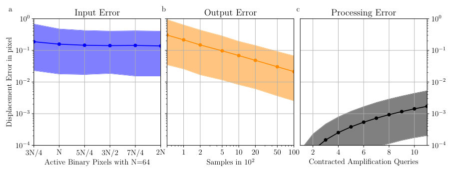
<figcaption class="paper-figure-caption"><b>Fig 4.</b> Fig. 4 Quantification of error sources of the quantum algorithm with experimental data. All errors are analyzed separately. The median of each error is illustrated in a solid line and the corresponding 5% −95% percentile with a colored area. These quantities are evaluated over 1212 interrogation window pairs from the PIV challenge data as discussed in the main text. (a) Statistical quantities of the input error due to sparse binary images. (b) The output error due to sampling with finitely many measurements. (c) The processing error due to contracted amplitude amplification as discussed in the main text, estimated by the proposed prediction method.</figcaption>
</figure>
</div>

<p><strong>Summary.</strong> This paper presents QuPIV, a novel quantum algorithm designed to accelerate Particle Image Velocimetry (PIV) calculations by replacing classical FFT-based cross-correlation with multidimensional Quantum Fourier Transforms. The authors demonstrate the feasibility of this end-to-end process using experimental data, showing that advanced techniques like contracted amplitude amplification can maintain high accuracy for determining fluid velocity fields.</p>
<p><strong>Why it may be interesting.</strong> While focused on fluid dynamics, the core methodology—developing complex, multi-stage quantum algorithms for signal processing using advanced techniques like contracted amplitude amplification—is highly relevant to developing general quantum computational primitives applicable across physics domains.</p>
<details>
<summary>Detailed structure</summary>
<p><strong>Main problem.</strong> The authors propose a quantum algorithm, QuPIV, designed to replace the classical computation required for Particle Image Velocimetry (PIV) by leveraging quantum Fourier Transforms.</p>
<p><strong>Main result.</strong> The end-to-end quantum pipeline demonstrates feasibility on experimental PIV data, showing that error sources like input preparation and processing can be analyzed individually, with performance comparable to classical methods.</p>
<p><strong>Method.</strong> The methodology involves an end-to-end quantum circuit utilizing multidimensional Quantum Fourier Transforms (QFTs) for cross-correlation evaluation, coupled with novel state preparation and contracted amplitude amplification techniques.</p>
<p><strong>Model / system.</strong> The application is PIV, a technique used to measure velocity fields in fluid dynamics by analyzing particle image correlations between two frames. The quantum computation operates on the correlation map derived from these images.</p>
<p><strong>Key observables.</strong> Velocity vector ($\vec{u} = \Delta\vec{x}/\Delta t$), peak position error (Euclidean norm), and correlation map ($C_{map}$).</p>
<p><strong>Important parameters / regimes.</strong> Image size ($N$ pixels), overlap percentage, number of amplification queries ($M$).</p>
<p><strong>Assumptions / limitations.</strong> The analysis assumes the ability to efficiently load image data into qubits and relies on approximations like using binary inputs (sparsification) and analyzing error sources separately.</p>
<p><strong>Figures summary.</strong> Figures illustrate the QuPIV workflow from input images to velocity calculation; one figure compares quantum, classical, and analytical solutions for PIV challenge data, while another details individual error source analysis (input, output, processing).</p>
<p><strong>Paper structure.</strong> The paper introduces the problem, outlines the end-to-end quantum algorithm pipeline (state preparation $
ightarrow$ QFT $
ightarrow$ Amplitude Amplification), presents theoretical and numerical studies on synthetic/experimental data, and concludes with detailed error analysis.</p>
</details>
<details>
<summary>Abstract</summary>
<p>Particle Image Velocimetry (PIV) is the prime image-processing technique to measure and visualize velocity fields of laminar and turbulent flows. The velocity field vectors are obtained with sub-pixelaccuracy by analyzing cross-correlations, empowered by Fast Fourier Transforms (FFT). Here, we present a quantum algorithm with multidimensional quantum Fourier Transforms, termed Quantum-based PIV (QuPIV), to replace the classical computation of up to millions of velocity vectors. Our end-to-end quantum algorithm includes a novel state preparation, modified amplitude amplification, and the output extraction. We enhance amplitude amplification by a contracted ground-state projector, which allows a significant reduction of the number of gates in the quantum circuit. We justify the end-to-end capability with numerical studies on all stages of the algorithm on both synthetic and experimental data.</p>
</details>
<p><sub><a href="#top">↑ back to top</a></sub></p>

<p><a id="paper-2607.13784"></a></p>
<h3 id="foliated-quantum-error-correction-for-qudits"><a href="http://arxiv.org/abs/2607.13784v1">Foliated Quantum Error Correction for Qudits</a></h3>
<p><strong>Authors:</strong> Gözde Üstün, Simon J. Devitt, Jason Saied<br>
<strong>Type:</strong> theory · <strong>Category:</strong> quantum information and computing · <strong>PDF:</strong> <a href="https://arxiv.org/pdf/2607.13784v1">https://arxiv.org/pdf/2607.13784v1</a><br>
<strong>Analysis basis:</strong> full PDF text, analyzed in chunks
<strong>Topic relevance:</strong> <code>quantum measurements</code> <strong>2/5</strong> · <code>entanglement &amp; information structure</code> <strong>1/5</strong> · <code>measurement-induced transitions</code> <strong>1/5</strong></p>
<div class="figure-strip-hint">↔ Scroll figures horizontally</div>
<div class="paper-figures-scroll">
<figure class="paper-figure-card">
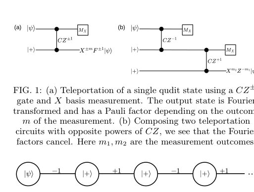
<figcaption class="paper-figure-caption"><b>Fig 1.</b> FIG. 2: A linear chain state Ch(ψ), encoding the state |ψ⟩in a measurement-based manner.</figcaption>
</figure>
<figure class="paper-figure-card">
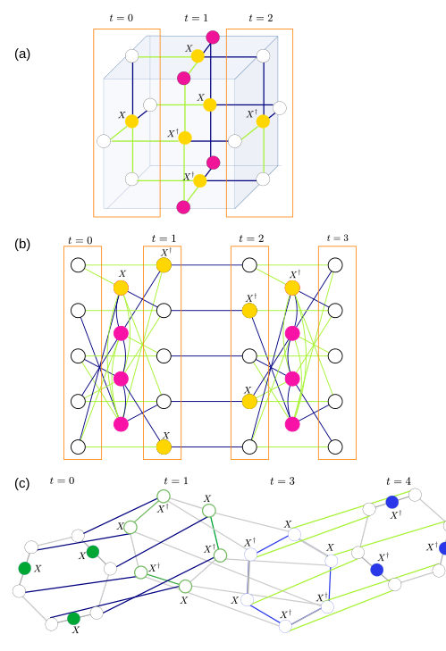
<figcaption class="paper-figure-caption"><b>Fig 2.</b> FIG. 3: Examples of foliated qudit codes. (a) shows the unit cell for the qudit toric code, (b) shows two measurement rounds (four time steps) of the foliated (qudit) perfect code, and (c) shows part of the foliated CSS honeycomb code. In all examples, darker lines correspond to edges with weight +1, while green lines correspond to edges with weight −1. In (a) and (b), the golden nodes (labeled with Paulis) depict an example detector of the foliated code. (With the uninvolved ancillas colored pink.) The colors in (c) are used differently to avoid conflicting with the honeycomb code color conventions. We show enough of the graph state to exhibit the detector corresponding to a red face of...</figcaption>
</figure>
<figure class="paper-figure-card">
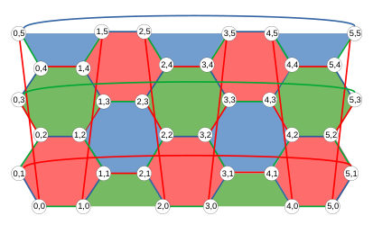
<figcaption class="paper-figure-caption"><b>Fig 3.</b> FIG. 5: The toric hexagonal lattice used for the CSS honey- comb code [26] and our qudit generalization.</figcaption>
</figure>
<figure class="paper-figure-card">
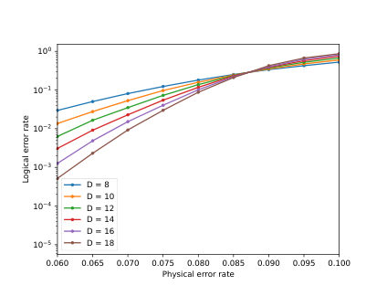
<figcaption class="paper-figure-caption"><b>Fig 4.</b> FIG. 4: The logical vs. physical error rate of the foliated toric code of qudit dimension d = 7919, at different lattice sizes D.</figcaption>
</figure>
</div>

<p><strong>Summary.</strong> This paper introduces a general 'foliated' framework to implement Measurement-Based Quantum Computing (MBQC) using qudits. It constructs resource graph states by extending 2D error-correcting codes across time layers, allowing fault-tolerant computation for various code types. The results confirm the method's applicability and show that performance metrics like error thresholds improve with higher qudit dimensions.</p>
<p><strong>Why it may be interesting.</strong> This work directly impacts quantum computing theory by extending established QEC concepts from qubits to qudits, which is crucial for realizing high-capacity photonic quantum information processing.</p>
<details>
<summary>Detailed structure</summary>
<p><strong>Main problem.</strong> To develop a general framework for constructing fault-tolerant Measurement-Based Quantum Computing (MBQC) using qudits by 'foliating' any Pauli-based quantum error-correcting code.</p>
<p><strong>Main result.</strong> The authors provide a generalized construction applicable to various code types (stabilizer, subsystem, dynamical) and demonstrate that the error correction threshold increases with the qudit dimension $d$.</p>
<p><strong>Method.</strong> The method involves constructing a time-extended graph state ($\Lambda$) by foliating the 2D code structure across multiple time layers. Fault tolerance is achieved via sequential X-basis measurements on ancilla qubits, requiring careful calculation of 'detectors' to track stabilizer values.</p>
<p><strong>Model / system.</strong> The system utilizes qudits (dimension $d$, where $d$ is prime) encoded within a graph state structure that evolves over discrete time steps ($t$). This framework is particularly relevant for photonic platforms where high-dimensional states are natural resources.</p>
<p><strong>Key observables.</strong> Error correction thresholds, stabilizer generators of the graph state, and detector observables (which must commute with all measurements).</p>
<p><strong>Important parameters / regimes.</strong> The qudit dimension $d$ (prime), the number of data/ancilla qubits ($N, T$), and the error model (photon loss dominant).</p>
<p><strong>Assumptions / limitations.</strong> The framework initially focuses on CSS-type codes, though generalizations to non-CSS and dynamical types are discussed. For photonic implementation, fusion-based computation is suggested due to potential limitations in deterministic gates.</p>
<p><strong>Figures summary.</strong> Figures illustrate the qudit toric code unit cell, the process of foliating perfect codes across time layers, and detailed diagrams showing how detectors span multiple time steps ($t=0$ to $t=4$) for both CSS and non-CSS cases.</p>
<p><strong>Paper structure.</strong> The paper builds from defining the general framework for qudit graph states and measurement protocols (MBQC). It then details the construction of detectors by analyzing stabilizer generators across time layers, providing specific examples like the qudit toric code and generalized honeycomb codes to validate the method.</p>
</details>
<details>
<summary>Abstract</summary>
<p>We present a framework for foliating any Pauli-based quantum error-correcting code over prime-dimensional qudits. For any such code, we obtain a qudit graph state that can be measured to perform fault-tolerant measurement-based quantum computing. Such a paradigm is of interest in platforms such as photonics, where measurement-based protocols are natural and high-dimensional states are readily available. We discuss several examples for arbitrary prime dimension $d$, such as the qudit toric code (stabilizer, CSS), the $d$-dimensional perfect $[[5,1,3]]$ code (stabilizer, non-CSS), and a straightforward $d$-dimensional generalization of the CSS honeycomb code (dynamical, CSS). Under a simple error model, we numerically calculate thresholds for the foliated qudit toric code and demonstrate that they are comparable to the non-foliated version.</p>
</details>
<p><sub><a href="#top">↑ back to top</a></sub></p>

<p><a id="paper-2607.13138"></a></p>
<h3 id="half-dualization-and-non-invertible-particle-vortex-duality-defect-on-lattice"><a href="http://arxiv.org/abs/2607.13138v1">Half dualization and non-invertible particle-vortex duality defect on lattice</a></h3>
<p><strong>Authors:</strong> Zhi-Qiang Gao<br>
<strong>Type:</strong> theory · <strong>Category:</strong> statistical mechanics · <strong>PDF:</strong> <a href="https://arxiv.org/pdf/2607.13138v1">https://arxiv.org/pdf/2607.13138v1</a><br>
<strong>Analysis basis:</strong> full PDF text, analyzed in chunks
<strong>Topic relevance:</strong> <code>analog quantum simulation</code> <strong>2/5</strong> · <code>Keldysh / 2PI / non-Gaussian methods</code> <strong>1/5</strong> · <code>driven-dissipative phase transition</code> <strong>1/5</strong></p>
<div class="figure-strip-hint">↔ Scroll figures horizontally</div>
<div class="paper-figures-scroll">
<figure class="paper-figure-card">
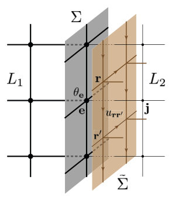
<figcaption class="paper-figure-caption"><b>Fig 1.</b> FIG. 1. Duality defect constructed from half dualization of the charge-n XY model on cubic lattice. The duality trans- formation is performed only on sites and links in L2, which yields an integer variable urr′ defined on dual lattice links ⟨rr′⟩marked in brown. The duality defect is supported on the union of the boundary Σ and the dual boundary ˜Σ, col- ored in grey and brown, respectively. It is composed by the coupling between θe on Σ and curl of urr′ on ˜Σ.</figcaption>
</figure>
<figure class="paper-figure-card">
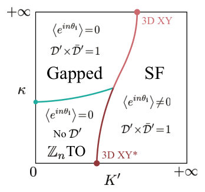
<figcaption class="paper-figure-caption"><b>Fig 2.</b> FIG. 2. Schematic phase diagram of the gauged XY model Eq. (10) as a function of K′ and κ. The 3D XY and XY∗</figcaption>
</figure>
</div>

<p><strong>Summary.</strong> The paper introduces 'half dualization' to construct non-invertible particle-vortex duality defects on a lattice. By applying this technique to the charge-$n$ XY model, it demonstrates that these defects are fundamentally non-invertible due to underlying $\mathbb{Z}_n$ symmetries. Crucially, the authors show that introducing gauge fields into the system resolves this non-invertibility as the theory flows to its infrared limit.</p>
<p><strong>Why it may be interesting.</strong> This work provides a powerful general mathematical tool (half dualization) for analyzing topological defects and duality structures in lattice field theories, which is highly relevant for understanding critical phenomena and phase transitions in condensed matter systems.</p>
<details>
<summary>Detailed structure</summary>
<p><strong>Main problem.</strong> The research introduces 'half dualization' as a general method to construct non-invertible duality defects by performing a duality transformation only in a subregion of spacetime.</p>
<p><strong>Main result.</strong> Half dualization successfully constructs a non-invertible particle-vortex duality defect for the charge-$n$ XY model, and this non-invertibility is shown to be resolved (flowing to an invertible defect) when the system is gauged or Higgsed in the infrared limit.</p>
<p><strong>Method.</strong> The core method involves dividing the lattice into two regions ($L_1, L_2$) separated by a cut ($\Sigma$), performing the duality transformation only on $L_2$, and analyzing the resulting interface coupling term (the defect).</p>
<p><strong>Model / system.</strong> The primary model is the (2+1)-dimensional Villainized charge-$n$ XY model on a cubic lattice, which is later generalized to include $\mathbb{Z}_n$ gauge fields. The Hamiltonian involves cosine interactions dependent on the charge $n$.</p>
<p><strong>Key observables.</strong> Non-invertibility of the duality defect (tested by fusing it with its reverse), and the flow of the defect's nature (non-invertible to invertible) in the infrared limit.</p>
<p><strong>Important parameters / regimes.</strong> The charge exponent $n$, coupling constants ($K, K', \kappa$), and the regime defined by comparing $K'$ to $n^2K$.</p>
<p><strong>Assumptions / limitations.</strong> The method is general and dimension-independent; specific analyses rely on approximations like the Villainization or assuming certain couplings are small enough to retain $\mathbb{Z}_n$ structure.</p>
<p><strong>Figures summary.</strong> Figure 1 illustrates the construction of the duality defect across a codimension-one cut. Figure 2 schematically shows the phase diagram of the gauged model, illustrating the flow from non-invertible to invertible defects.</p>
<p><strong>Paper structure.</strong> The paper first introduces half dualization using the XY model to find a non-invertible defect. It then applies this technique to the $\mathbb{Z}_n$-gauged version of the model, showing how gauging causes the defect to flow towards an invertible state in the IR.</p>
</details>
<details>
<summary>Abstract</summary>
<p>We introduce half dualization as a general principle to construct non-invertible duality defects. The construction performs a duality transformation only in a subregion of spacetime, leaving an interface between the original theory and its dual. A non-invertible duality defect can be hosted on this interface. Half dualization is applicable whenever a local duality transformation is available, and does not depend on the spacetime dimension. We demonstrate the construction procedure in the (2+1)-dimensional Villainized charge-$n$ XY model on a cubic lattice. Half dualization yields a non-invertible particle-vortex duality defect whose fusion with its orientation reverse produces a (1+1)-dimensional $\mathbb{Z}_n$ gauge theory on the fusion surface. We then apply half dualization to the $\mathbb{Z}_n$-gauged XY model relevant to the 3D XY$^\ast$ transition. In the gauged model, the half dualization interface hosts a gauge covariant duality wall, rather than a genuine gauge invariant duality defect. It flows to an invertible duality defect in infrared when the $\mathbb{Z}_n$ gauge theory is confined or Higgsed.</p>
</details>
<p><sub><a href="#top">↑ back to top</a></sub></p>

<p><a id="paper-2607.13699"></a></p>
<h3 id="machine-learning-development-for-quantum-computing-and-neutrino-physics"><a href="http://arxiv.org/abs/2607.13699v1">Machine learning development for quantum computing and neutrino physics</a></h3>
<p><strong>Authors:</strong> Annalisa De Lorenzis<br>
<strong>Type:</strong> both · <strong>Category:</strong> disordered systems and neural networks · <strong>PDF:</strong> <a href="https://arxiv.org/pdf/2607.13699v1">https://arxiv.org/pdf/2607.13699v1</a><br>
<strong>Analysis basis:</strong> full PDF text, analyzed in chunks
<strong>Topic relevance:</strong> <code>QC/QI experiment</code> <strong>2/5</strong> · <code>entanglement &amp; information structure</code> <strong>1/5</strong> · <code>methods for driven-dissipative</code> <strong>1/5</strong></p>
<div class="figure-strip-hint">↔ Scroll figures horizontally</div>
<div class="paper-figures-scroll">
<figure class="paper-figure-card">
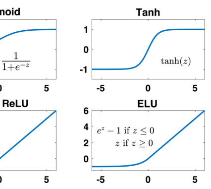
<figcaption class="paper-figure-caption"><b>Fig 1.</b> Figure 2.1: Some non-linear activation functions. Both saturating (top row) and</figcaption>
</figure>
<figure class="paper-figure-card">
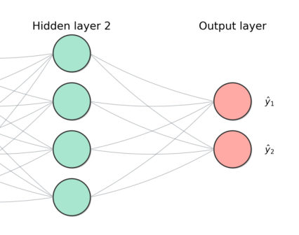
<figcaption class="paper-figure-caption"><b>Fig 2.</b> Figure 2.2: A representation of a feed-forward neural network with two hidden</figcaption>
</figure>
<figure class="paper-figure-card">

<figcaption class="paper-figure-caption"><b>Fig 3.</b> Figure 2.3: Convolution of a multi-channel image with K filters.</figcaption>
</figure>
<figure class="paper-figure-card">

<figcaption class="paper-figure-caption"><b>Fig 4.</b> Figure 2.4: Example of a 2×2 max-pooling operation. Each 2×2 region of the input</figcaption>
</figure>
<figure class="paper-figure-card">

<figcaption class="paper-figure-caption"><b>Fig 5.</b> Figure 2.5: Architecture of a typical CNN. Neurons in the convolutional layers</figcaption>
</figure>
</div>

<p><strong>Summary.</strong> This thesis explores the dual potential of machine learning—both classical and quantum—for analyzing complex datasets in particle physics. It develops Quantum Extreme Learning Machines (QELMs) for quantum data analysis and applies deep convolutional networks to classify neutrino events from water Cherenkov detector images, highlighting ML's role in modern fundamental physics research.</p>
<p><strong>Why it may be interesting.</strong> It bridges advanced ML techniques with fundamental physics data analysis, providing insights into when quantum information processing might yield non-trivial computational advantages over classical methods in structured physical measurements.</p>
<details>
<summary>Detailed structure</summary>
<p><strong>Main problem.</strong> The work investigates applying machine learning, both classical (deep learning) and quantum (QELMs), to analyze complex, high-dimensional data arising in fundamental physics experiments like neutrino detection.</p>
<p><strong>Main result.</strong> CNNs effectively classify complex neutrino events from detector images, while QELM analysis suggests that useful feature generation relies on local entanglement build-up over a finite time scale rather than requiring fully scrambled quantum states.</p>
<p><strong>Method.</strong> The paper employs Quantum Extreme Learning Machines (QELMs) for quantum data processing and Convolutional Neural Networks (CNNs), including residual networks, for classical image classification in neutrino physics.</p>
<p><strong>Model / system.</strong> The systems include water Cherenkov detectors used in neutrino experiments (e.g., Hyper-Kamiokande) and the theoretical framework of QELMs operating on N-qubit states governed by fixed unitary evolution.</p>
<p><strong>Key observables.</strong> Classification accuracy for event discrimination, entanglement growth, and the characteristic transition time ($t^*$) in quantum dynamics.</p>
<p><strong>Important parameters / regimes.</strong> Number of qubits (N), evolution time (t), and detector charge/timing information from PMTs.</p>
<p><strong>Assumptions / limitations.</strong> The QELM analysis suggests that a physically meaningful intermediate regime exists where local dynamics are sufficient for feature extraction, not requiring generic quantum advantage.</p>
<p><strong>Figures summary.</strong> Not specified by the notes; the focus is on methodology and results across two distinct applications (QML vs. Neutrino Imaging).</p>
<p><strong>Paper structure.</strong> The thesis is structured in two main parts: the first develops QELMs, analyzing encoding strategies and quantum dynamics; the second applies deep learning to classify complex event topologies from simulated water Cherenkov detector images.</p>
</details>
<details>
<summary>Abstract</summary>
<p>This thesis investigates the application of machine-learning methods in the context of quantum computing and neutrino physics, with particular emphasis on the construction of effective representations for complex, high-dimensional data. The first part of the work is devoted to Quantum Extreme Learning Machines (QELMs), a hybrid quantum--classical framework in which classical data are encoded into quantum states and processed through fixed quantum dynamics, while learning is performed by a classical readout layer. Within this framework, we analyze the role of encoding strategies, feature-reduction methods, Hamiltonian structure, and measurement, with particular focus on the relationship between quantum dynamics, expressivity, entanglement, and classical simulability. The second part of the thesis concerns the application of deep learning to the analysis of images produced by water Cherenkov detectors in neutrino physics. Convolutional architectures, including residual networks, are developed for the classification of complex events in realistic simulated datasets, showing that such models can effectively extract relevant information from detector data. Taken together, these results highlight the potential of machine learning, in both its classical and quantum forms, as a powerful framework for the analysis of complex data in fundamental physics, while also outlining relevant challenges and directions for future research.</p>
</details>
<p><sub><a href="#top">↑ back to top</a></sub></p>

<p><a id="paper-2607.13267"></a></p>
<h3 id="quantum-motion-from-local-transition-susceptibility"><a href="http://arxiv.org/abs/2607.13267v1">Quantum Motion from Local Transition Susceptibility</a></h3>
<p><strong>Authors:</strong> Jan Klaers<br>
<strong>Type:</strong> theory · <strong>Category:</strong> other · <strong>PDF:</strong> <a href="https://arxiv.org/pdf/2607.13267v1">https://arxiv.org/pdf/2607.13267v1</a><br>
<strong>Analysis basis:</strong> full PDF text, analyzed in chunks
<strong>Topic relevance:</strong> <code>quantum measurements</code> <strong>2/5</strong> · <code>Keldysh / 2PI / non-Gaussian methods</code> <strong>1/5</strong> · <code>driven-dissipative phase transition</code> <strong>1/5</strong></p>
<div class="figure-strip-hint">↔ Scroll figures horizontally</div>
<div class="paper-figures-scroll">
<figure class="paper-figure-card">

<figcaption class="paper-figure-caption"><b>Fig 1.</b> Figure 1. Coupling scheme defining the local transition sus- ceptibility. A weak coupling of rate J acts over the region C of length L, transferring amplitude from the initial channel |1⟩to the orthogonal channel |2⟩. The populations N1 and N2 are integrated over the same downstream comparison region R. Their ratio in the weak-coupling limit defines χ(L, xc) and the passage speed vp(L, xc) = χ−1(L, xc).</figcaption>
</figure>
<figure class="paper-figure-card">

<figcaption class="paper-figure-caption"><b>Fig 2.</b> Figure 2. Finite-window passage speed for the standing wave formed by reflection at a hard wall, Eq. (7), shown for three positions xc of the coupling region. The response depends on kL and on the standing-wave phase 2kxc because the two counterpropagating branches interfere within the coupling re- gion. For kL ≫1, this interference averages out and vp(L, xc) approaches the single-branch speed v = ℏk/m. The vertical range is truncated at vp/v = 4.</figcaption>
</figure>
<figure class="paper-figure-card">

<figcaption class="paper-figure-caption"><b>Fig 3.</b> Figure 3. Relativistic coordinate passage speed as a function of γ = (E −V )/(Mc2). In the propagating regions, |γ| &gt; 1, the susceptibility yields vp/c = p</figcaption>
</figure>
</div>

<p><strong>Summary.</strong> The paper introduces the concept of passage speed derived from the transition susceptibility, offering a method to characterize quantum motion independent of net probability flow. By applying this technique to relativistic systems, the authors show that this passage speed correctly predicts local dispersion velocities and establishes the reduced Compton wavelength as a fundamental length scale governing relativistic quantum dynamics.</p>
<p><strong>Why it may be interesting.</strong> This work provides a novel diagnostic tool ($v_p$) to measure intrinsic quantum motion that is robust even when standard probability current measures vanish (e.g., standing waves), linking it directly to fundamental scales like the Compton wavelength.</p>
<details>
<summary>Detailed structure</summary>
<p><strong>Main problem.</strong> To characterize quantum motion independently of probability transport by analyzing how a quantum state responds to weak local perturbations.</p>
<p><strong>Main result.</strong> The inverse transition susceptibility defines a passage speed that reproduces the local dispersion velocity in both propagating and evanescent regions, establishing a relativistic bound related to the reduced Compton wavelength.</p>
<p><strong>Method.</strong> The methodology involves calculating the transition susceptibility ($\chi$) of quantum states subjected to weak localized couplings ($J$), defining the passage speed as $v_p = \chi^{-1}$.</p>
<p><strong>Model / system.</strong> The analysis considers general quantum states, extending from non-relativistic Schrödinger equations to relativistic Klein-Gordon waveguides coupled transversely. The system is probed by applying weak local perturbations.</p>
<p><strong>Key observables.</strong> Passage speed ($v_p$), transition susceptibility ($\chi$), and the local dispersion velocity.</p>
<p><strong>Important parameters / regimes.</strong> The coupling strength ($J$), energy ($\epsilon$), wave number ($k$), decay constant ($\kappa$), and the reduced Compton wavelength ($\lambda_C/c$).</p>
<p><strong>Assumptions / limitations.</strong> For relativistic extensions, an auxiliary two-stream model is introduced for evanescent states. The definition of $v_p$ depends on the placement of the coupling evaluation window.</p>
<p><strong>Figures summary.</strong> Figure 1 illustrates the general coupling scheme; Figure 2 shows the ratio $v_p/v$ for a standing wave at various coupling positions ($x_c$). Figure 3 plots $v_p/c$ versus the Lorentz factor ($\gamma$) for both propagating and evanescent regimes.</p>
<p><strong>Paper structure.</strong> The paper first establishes the concept of passage speed via susceptibility in general settings (including standing waves). It then extends this framework to a relativistic model involving coupled Klein-Gordon waveguides, deriving specific formulas for $v_p$ in both propagating and decaying regimes.</p>
</details>
<details>
<summary>Abstract</summary>
<p>We characterize quantum motion based on the susceptibility of a quantum state to weak local state conversion. The inverse susceptibility can be interpreted as a passage speed characterizing local motion independently of probability transport. For individual WKB branches, it reproduces the magnitude of the local dispersion velocity in both propagating and evanescent regions. A relativistic extension yields a passage speed bounded by the speed of light, reaching this bound at the finite energy corresponding to the center of the mass gap, where the evanescent decay length equals the reduced Compton wavelength. This identifies the reduced Compton wavelength as the shortest stationary evanescent length scale compatible with relativistic quantum motion.</p>
</details>
<p><sub><a href="#top">↑ back to top</a></sub></p>

<p><a id="paper-2607.13848"></a></p>
<h3 id="temperature-driven-sodium-ion-dynamical-to-static-crossover-in-the-zig-zag-ordered-phase-of-namath655mathcoomath656math"><a href="http://arxiv.org/abs/2607.13848v1">Temperature-driven sodium-ion dynamical-to-static crossover in the zig-zag ordered phase of Na$_{0.5}$CoO$_2$</a></h3>
<p><strong>Authors:</strong> Shangfei Wu, Hengxin Tan, Dong Wu, Mingshu Tan, Xinyu Zhou, Tianchen Hu, Tao Dong, Feng Jin, Qingming Zhang, Nanlin Wang<br>
<strong>Type:</strong> both · <strong>Category:</strong> strongly correlated electrons · <strong>PDF:</strong> <a href="https://arxiv.org/pdf/2607.13848v1">https://arxiv.org/pdf/2607.13848v1</a><br>
<strong>Analysis basis:</strong> full PDF text, analyzed in chunks
<strong>Topic relevance:</strong> <code>driven-dissipative phase transition</code> <strong>2/5</strong> · <code>Frenkel-Kontorova</code> <strong>1/5</strong> · <code>non-equilibrium dynamics</code> <strong>1/5</strong></p>
<div class="figure-strip-hint">↔ Scroll figures horizontally</div>
<div class="paper-figures-scroll">
<figure class="paper-figure-card">

<figcaption class="paper-figure-caption"><b>Fig 1.</b> FIG. 1. (a) Crystal structure of Na0.5CoO2 at 300 K with space group Pnmm (No. 59) (point group: D2h). (b) Na-disordered phase of Na0.5CoO2 above TS. (c) Na-zigzag-ordered phase of Na0.5CoO2 below TS. The triangular lattice represents the Co lattice, and the O atoms are omitted. The red dashed rectangle in panel (c) denotes the reconstructed 2 × √</figcaption>
</figure>
<figure class="paper-figure-card">

<figcaption class="paper-figure-caption"><b>Fig 2.</b> FIG. 2. (a)-(b) Raman spectra of Na0.5CoO2 at 300 K and 7 K in the XX and XY scattering geometries from the ab plane recorded by 633 nm laser line. The arrows with red labels mark the Ag mode, while the arrows with blue labels mark the B1g modes. (c)-(d) same as (a)-(b) but for the X′X′ and X′Y ′ scattering geometries. The arrow in (d) marks the shoulder peak A8 g. (e)-(h) Zoom-in plot of the selected Raman response in the XX, XY , X′X′, and X′Y ′ scattering geometries at 7 K. (i) Same as (h) but for 300 K.</figcaption>
</figure>
<figure class="paper-figure-card">

<figcaption class="paper-figure-caption"><b>Fig 3.</b> FIG. 3. The lattice vibration patterns from the DFT phonon calculations for the first three low-energy modes observed in the experiment. (a) B1 1g mode at 129.8 (129) cm−1 . (b)A1 g mode at 154.5 (157) cm−1 . (c) A2 g mode at 327.9 (322) cm−1 . The corresponding experimental phonon frequencies are in parentheses.</figcaption>
</figure>
<figure class="paper-figure-card">

<figcaption class="paper-figure-caption"><b>Fig 4.</b> FIG. 4. Temperature dependence of the Raman spectra for Na0.5CoO2 in the X′X′ (Ag+B1g) scattering geometry below 350 cm−1 (a) and above 350 cm−1 (b).</figcaption>
</figure>
<figure class="paper-figure-card">

<figcaption class="paper-figure-caption"><b>Fig 5.</b> FIG. 5. Temperature dependence of the peak position, HWHM (half-width at half-maximum), and integrated intensity for the Raman modes of Na0.5CoO2. (a)-(c) For the B1 1g mode at 129 cm−1 . (d)-(f) For the A1 g mode at 157 cm−1 . (g)-(i) For the A2 g mode at 322 cm−1 . (j)-(l) For the mode at around 476 cm−1 which contains the A5 g and B3 1g modes. (m)-(o) For the A6 g mode at 498 cm−1 . (p)-(r) For the A8 g mode at 565 cm−1 . (s)-(u) For the A7 g mode at 573 cm−1 . The solid black lines in (j), (k), (m), (n), (p), (q), (s), and (t) are the fitting of the temperature dependence of the peak position and HWHM for the Raman modes above Tc1 according to the anharmonic phonon decay model (Appendix...</figcaption>
</figure>
</div>

<p><strong>Summary.</strong> The study uses Raman spectroscopy and DFT calculations on $    ext{Na}_{0.5}   ext{CoO}_2$ to investigate the sodium-ion lattice dynamics. They identify a temperature $T^* \sim 300	ext{ K}$ where sodium ions undergo a dynamical-to-static crossover, suggesting this structural freezing is crucial for establishing the subsequent electronic and magnetic order in the cobaltate layers.</p>
<p><strong>Why it may be interesting.</strong> This work provides a direct spectroscopic probe of ion dynamics that precedes electronic ordering in a strongly correlated material, offering insights into how structural degrees of freedom can gate emergent quantum phases.</p>
<details>
<summary>Detailed structure</summary>
<p><strong>Main problem.</strong> The study investigates the temperature-driven dynamical-to-static crossover of sodium ions within the zig-zag ordered phase of $  ext{Na}_{0.5}   ext{CoO}_2$. The goal is to link this ion dynamics to emergent electronic and magnetic orders in the cobaltate layer.</p>
<p><strong>Main result.</strong> The authors detected two novel sodium phonon modes appearing below $T^* \sim 300	ext{ K}$, interpreting this anomaly as a crossover where gradual sodium ion freezing sets the stage for subsequent CoO$_2$ ordering.</p>
<p><strong>Method.</strong> A combination of polarization-resolved Raman spectroscopy and first-principles DFT calculations (including Hubbard U corrections) was employed to analyze lattice dynamics.</p>
<p><strong>Model / system.</strong> The physical system is $    ext{Na}_{0.5}   ext{CoO}_2$, a layered cobaltate compound known for complex temperature-dependent electronic and magnetic transitions ($   ext{AFM}$ transition at $87	ext{ K}$).</p>
<p><strong>Key observables.</strong> Sodium phonon mode frequencies, linewidth broadening vs. temperature, in-plane resistivity $
ho(T)$, and magnetic susceptibility $\chi(T)$.</p>
<p><strong>Important parameters / regimes.</strong> $T^* \sim 300	ext{ K}$ (crossover temperature), $T_{	ext{S}} \sim 460	ext{ K}$ (zigzag ordering temperature), Hubbard U parameter ($2.5	ext{ eV}$ chosen for best fit).</p>
<p><strong>Assumptions / limitations.</strong> The analysis assumes the observed phonon anomalies at $T^*$ represent a true dynamical-to-static crossover, and that DFT calculations within the harmonic approximation capture the essential physics despite discrepancies in high-frequency modes.</p>
<p><strong>Figures summary.</strong> Figures show temperature dependence of Raman spectra across various geometries; Figure 1 illustrates $
ho(T)$ and $\chi(T)$ showing transitions near $300	ext{ K}$; phonon dispersion plots confirm Na-dominant low-energy modes.</p>
<p><strong>Paper structure.</strong> The paper systematically presents experimental measurements (Raman, transport) to identify anomalous temperature regimes ($T^*$), followed by theoretical calculations (DFT/Phonopy) to assign physical origins to the observed lattice vibrations and link them mechanistically to known magnetic transitions.</p>
</details>
<details>
<summary>Abstract</summary>
<p>We employ polarization-resolved Raman spectroscopy combined with first-principles calculations to study the sodium-ion lattice dynamics in a sodium zig-zag ordered cobaltate compound Na$_{0.5}$CoO$_2$. We detect two sodium phonon modes for the first time, and their mode frequencies are consistent with first-principles phonon calculations based on an orthorhombic unit cell. We find that they appear below around $T^*\sim300\pm50$K with large linewidth broadening, much lower than the sodium zig-zag ordering temperature $T_\text{S}\sim460$K, and then narrow at lower temperatures. We interpret the sodium-phonon anomalies occurring at $T^*$ as a dynamical-to-static crossover involving mainly the motion of sodium ions. Our results suggest that the gradual freezing of the sodium ions and the well-defined static sodium-zigzag order below $T^*$ set the stage for the emergent electronic and magnetic orders in the CoO$_2$ layer of Na$_{0.5}$CoO$_2$.</p>
</details>
<p><sub><a href="#top">↑ back to top</a></sub></p>

<p><a id="paper-2607.13135"></a></p>
<h3 id="classical-and-quantum-mechanics-across-representations-an-operational-reading-of-the-wigner-weyl-correspondence"><a href="http://arxiv.org/abs/2607.13135v1">Classical and quantum mechanics across representations: an operational reading of the Wigner Weyl correspondence</a></h3>
<p><strong>Authors:</strong> Samuel Schlegel, Borivoje Dakić, Flavio Del Santo<br>
<strong>Type:</strong> theory · <strong>Category:</strong> other · <strong>PDF:</strong> <a href="https://arxiv.org/pdf/2607.13135v1">https://arxiv.org/pdf/2607.13135v1</a><br>
<strong>Analysis basis:</strong> full PDF text, analyzed in chunks
<strong>Topic relevance:</strong> <code>Keldysh / 2PI / non-Gaussian methods</code> <strong>1/5</strong> · <code>analog quantum simulation</code> <strong>1/5</strong> · <code>correlated / nonlocal dissipation</code> <strong>1/5</strong> · <code>driven-dissipative phase transition</code> <strong>1/5</strong> · <code>entanglement &amp; information structure</code> <strong>1/5</strong> · <code>methods for driven-dissipative</code> <strong>1/5</strong> · <code>non-equilibrium dynamics</code> <strong>1/5</strong></p>
<div class="figure-strip-hint">↔ Scroll figures horizontally</div>
<div class="paper-figures-scroll">
<figure class="paper-figure-card">

<figcaption class="paper-figure-caption"><b>Fig 1.</b> FIG. 1. Classical and quantum state spaces are partially over- lapping sets when considered under the WW correspondence. Gaussian quantum states G can be found within the intersec- tion.</figcaption>
</figure>
<figure class="paper-figure-card">

<figcaption class="paper-figure-caption"><b>Fig 2.</b> FIG. 2. The entanglement hierarchy of Ref. [13] located on the classical/quantum state spaces of Fig. 1. Representational entanglement (RE): a classical density f ≥0 whose Hilbert- space image ˆρf is not positive, so covariance witnesses are ap- plied outside their domain. Hybrid entanglement (HE): states that are positive and entangled yet Wigner-positive, repro- ducible by a classical phase-space model at the quadrature level (C ∩Q). Genuine entanglement (GE): positive, entan- gled, and Wigner-negative, admitting no classical phase-space description.</figcaption>
</figure>
</div>

<p><strong>Summary.</strong> This paper rigorously compares classical and quantum mechanics by analyzing their equivalent representations in phase space and Hilbert space via the Wigner-Weyl correspondence. It argues that while the mathematical mapping is systematic, genuine physical distinctions—such as noncommutativity—are robust features, whereas artifacts like negativity are often merely consequences of choosing a specific representation language.</p>
<p><strong>Why it may be interesting.</strong> This work provides a deep structural comparison between classical and quantum descriptions, which is foundational for understanding the limits of semi-classical approximations used widely in AMO physics (e.g., Wigner function analysis).</p>
<details>
<summary>Detailed structure</summary>
<p><strong>Main problem.</strong> To systematically compare classical and quantum mechanics across different mathematical representations (phase space vs. Hilbert space) to distinguish between representation-dependent artifacts and robust, physically significant structural differences.</p>
<p><strong>Main result.</strong> The core physical structure is governed by noncommutativity, which manifests as the $\hbar$-dependent Moyal $\star$-product in phase space, rather than being tied to a preferred mathematical language (PS or HS).</p>
<p><strong>Method.</strong> The authors use the Wigner-Weyl correspondence to map between classical phase-space distributions and quantum operators, developing comparisons across states, kinematics, dynamics, and measurements.</p>
<p><strong>Model / system.</strong> The paper analyzes general classical and quantum mechanical theories, focusing on how their descriptions translate when moving between phase space ($\Gamma$) and Hilbert space. The comparison is formalized using the Wigner transform and Weyl quantization map.</p>
<p><strong>Key observables.</strong> Noncommutativity, $\hbar$-dependent $\star$-deformation of the algebra, positivity constraints (negativity in Wigner function), outcome statistics, and state-update rules.</p>
<p><strong>Important parameters / regimes.</strong> Planck's constant ($\hbar$), which dictates the transition from classical Poisson brackets to quantum Moyal brackets.</p>
<p><strong>Assumptions / limitations.</strong> The analysis assumes that the Weyl map provides an invertible translation at the level of symbols, but it explicitly notes that this map fails to preserve physical constraints like positivity.</p>
<p><strong>Figures summary.</strong> Figure 1 schematically shows the partial overlap between classical and quantum state spaces under the WW correspondence. Figure 2 illustrates a hierarchy of entanglement (RE $
ightarrow$ HE $
ightarrow$ GE) based on positivity requirements.</p>
<p><strong>Paper structure.</strong> The paper proceeds by establishing the mathematical machinery (WW map, Moyal product), comparing formalisms across different physical processes (kinematics, dynamics, measurement), and finally developing an operational hierarchy to distinguish genuine quantum features from representational artifacts like negativity or entanglement types.</p>
</details>
<details>
<summary>Abstract</summary>
<p>The physical content of a theory is not intrinsically tied to any single mathematical formalism. Both classical and quantum mechanics admit equivalent representations, notably in phase space and in Hilbert space, related by the Wigner-Weyl correspondence. While this correspondence has long been studied in mathematical physics, its foundational and operational implications are often left implicit. Here we give a systematic account of what changes, and what does not, when classical and quantum theories are expressed in each other's native language. This representational viewpoint separates artifacts (such as the appearance of non-positivity or negativity under certain maps) from robust structural distinctions that persist across representations, in particular noncommutativity and its $\hbar$-dependent $\star$-deformation of the classical algebra. We develop the comparison at the level of states, kinematics, and dynamics, and extend it to measurement by formulating both outcome statistics and state-update rules within the same framework.</p>
</details>
<p><sub><a href="#top">↑ back to top</a></sub></p>

<p><a id="paper-2607.13351"></a></p>
<h3 id="streamingqec-streaming-quantum-error-correction-in-tightly-integrated-quantum-classical-systems-via-certified-recurrence"><a href="http://arxiv.org/abs/2607.13351v1">StreamingQEC: Streaming Quantum Error Correction in Tightly Integrated Quantum-Classical Systems via Certified Recurrence</a></h3>
<p><strong>Authors:</strong> Panayiotis Christou, Shuwen Kan, Hao Wang, Ying Mao<br>
<strong>Type:</strong> theory · <strong>Category:</strong> quantum information and computing · <strong>PDF:</strong> <a href="https://arxiv.org/pdf/2607.13351v1">https://arxiv.org/pdf/2607.13351v1</a><br>
<strong>Analysis basis:</strong> full PDF text, analyzed in chunks
<strong>Topic relevance:</strong> <code>QC/QI experiment</code> <strong>1/5</strong> · <code>methods for driven-dissipative</code> <strong>1/5</strong> · <code>non-equilibrium dynamics</code> <strong>1/5</strong></p>
<div class="figure-strip-hint">↔ Scroll figures horizontally</div>
<div class="paper-figures-scroll">
<figure class="paper-figure-card">

<figcaption class="paper-figure-caption"><b>Fig 1.</b> Fig. 1. StreamingQEC maps protected logical computation to grounded, resource-bound QEC stages evaluated by explicit DES, auto staged-fluid, or certified recurrence.</figcaption>
</figure>
<figure class="paper-figure-card">

<figcaption class="paper-figure-caption"><b>Fig 2.</b> Fig. 2. Certified recurrence contracts a repeated QEC region only when its signed scheduling state and transition/metric deltas are stable.</figcaption>
</figure>
<figure class="paper-figure-card">

<figcaption class="paper-figure-caption"><b>Fig 3.</b> Fig. 3. Host runtime for calibrated code/decoder profiles. Squares are explicit references, filled circles are paired certified runs, and hollow circles are recurrent-only scaling. Paired points have zero reported simulator- output delta.</figcaption>
</figure>
<figure class="paper-figure-card">

<figcaption class="paper-figure-caption"><b>Fig 4.</b> Fig. 4. Auto staged-fluid makespan error over 17 exact references. All rows remain below the 10% screening target. Appendix D.2 reports the full data.</figcaption>
</figure>
<figure class="paper-figure-card">

<figcaption class="paper-figure-caption"><b>Fig 5.</b> Fig. 5. Representative accumulated QEC stage service on the mixed workload. Fast matching exposes transfer/control cost, while heavier profiles shift service toward decode. Appendix Table 12 reports the corresponding values.</figcaption>
</figure>
</div>

<p><strong>Summary.</strong> The paper introduces StreamingQEC, a novel system simulator designed to model the resource demands of fault-tolerant Quantum Error Correction (QEC) pipelines. It moves beyond simple circuit simulation by explicitly modeling classical resource contention across CPUs, GPUs, and interconnects. By using advanced techniques like certified recurrence, it achieves massive speedups while accurately predicting performance bottlenecks critical for building large-scale quantum computers.</p>
<p><strong>Why it may be interesting.</strong> This work provides crucial system-level performance data that bridges the gap between theoretical quantum circuit design and practical hardware implementation constraints, which is vital for scaling any physical quantum computer.</p>
<details>
<summary>Detailed structure</summary>
<p><strong>Main problem.</strong> The primary challenge is understanding resource contention and queuing across diverse classical resources (controller, compute, accelerator) during the continuous hybrid pipeline of fault-tolerant Quantum Error Correction (QEC). Existing simulators fail to model these system-level interactions.</p>
<p><strong>Main result.</strong> The proposed simulator achieves a 24.0x speedup over explicit simulation while accurately reproducing performance metrics across thousands of calibrated configurations, revealing critical bottlenecks like transfer limits and decoder stalls.</p>
<p><strong>Method.</strong> It introduces StreamingQEC, which uses an explicit Discrete-Event Simulation (DES) as a reference, supplemented by an auto staged-fluid mode for fast screening and a certified recurrence mechanism for state compression.</p>
<p><strong>Model / system.</strong> The system models the classical workload induced by protected logical quantum computation intervals ($\mathcal{I}_g$), which involves sequential QEC stages: readout, syndrome transport, decoding, feedback, and control. This is mapped onto a resource-constrained pipeline involving CPUs, GPUs, and dedicated decoders.</p>
<p><strong>Key observables.</strong> Simulated completion time (makespan), stage wait/busy times, queue pressure, backlog metrics, and resource utilization across various interconnects (PCIe, NVLink).</p>
<p><strong>Important parameters / regimes.</strong> Microsecond-scale QEC cycle timings; specific performance profiles derived from 9,998 measured decoder-runtime events.</p>
<p><strong>Assumptions / limitations.</strong> The simulation abstracts away quantum state evolution and logical error rate validation. The recurrence mechanism relies on matching scheduling states and metric contributions for compression.</p>
<p><strong>Figures summary.</strong> Figures summarize the system model mapping protected computation to resource-bound QEC stages, while tables detail grounded decoder/runtime evidence (e.g., Surface MWPM, qLDPC) and link performance parameters.</p>
<p><strong>Paper structure.</strong> The paper first establishes the need for system-level modeling in fault-tolerant QEC pipelines. It then details StreamingQEC's three execution modes (DES, staged-fluid, recurrence). The core is presenting the methodology for grounding runtime profiles from extensive decoder measurements and applying this to analyze resource bottlenecks.</p>
</details>
<details>
<summary>Abstract</summary>
<p>Fault-tolerant quantum computing requires a continuous hybrid quantum error correction (QEC) pipeline comprising measurement readout, syndrome transport, decoding, feedback, and control. Existing QEC simulators primarily evaluate circuits, noise models, decoders, and protocol-level outcomes. System architects, however, must also understand how these workloads contend for and queue across controller, compute, accelerator, and communication resources during protected logical execution. We introduce StreamingQEC, a system-level simulator that translates fault-tolerant logical workloads into resource-constrained streaming-QEC pipelines. An explicit discrete-event simulation provides the reference execution semantics. An automatic staged-fluid mode enables faster approximate design-space exploration, while a certified recurrence mechanism compresses repeated transitions only when their scheduling state and metric contributions match those of the explicit execution trace. We assemble a decoder-runtime dataset containing 9,998 measurements, of which 8,174 are used to fit performance profiles. Recurrence reproduces the reported explicit-simulation metrics across 35 calibrated-profile configurations, as well as additional workload and cadence validation cases. For a 16-job anchor workload, it preserves 59,743,936 decoding events while achieving a 24.0x host-side speedup, and recurrent simulations scale beyond 1.22 billion events. Across 17 reference configurations, the automatics taged-fluid mode yields a mean makespan error of 2.60% and a worst-case error of 6.45%. Design-space studies reveal transfer-limited resource matching,decoder-driven pipeline stalls, and saturation of dedicated resources under microsecond-scale QEC cycles.</p>
</details>
<p><sub><a href="#top">↑ back to top</a></sub></p>

<p><a id="paper-2607.13580"></a></p>
<h3 id="filon-methods-for-highly-oscillatory-controlled-quantum-systems"><a href="http://arxiv.org/abs/2607.13580v1">Filon Methods for Highly Oscillatory Controlled Quantum Systems</a></h3>
<p><strong>Authors:</strong> Spencer Lee, Daniel Appelö<br>
<strong>Type:</strong> theory · <strong>Category:</strong> numerical methods · <strong>PDF:</strong> <a href="https://arxiv.org/pdf/2607.13580v1">https://arxiv.org/pdf/2607.13580v1</a><br>
<strong>Analysis basis:</strong> full PDF text, analyzed in chunks
<strong>Topic relevance:</strong> <code>methods for driven-dissipative</code> <strong>1/5</strong> · <code>non-equilibrium dynamics</code> <strong>1/5</strong></p>
<div class="figure-strip-hint">↔ Scroll figures horizontally</div>
<div class="paper-figures-scroll">
<figure class="paper-figure-card">

<figcaption class="paper-figure-caption"><b>Fig 1.</b> Fig. 2.1: Convergence of the Hermite [11], Filon (Subsection 3.3), and Controlled Filon (Subsection 3.4) methods applied to the Rabi oscillator (2.3). In the RWA frame, the Filon and Controlled Filon methods are identical. The final-time errors are computed using the ℓ2 norm.</figcaption>
</figure>
<figure class="paper-figure-card">

<figcaption class="paper-figure-caption"><b>Fig 2.</b> Fig. 4.1: Lab- and RWA-frame time evolution for the CNOT gate simulation of Subsec- tion 4.2, starting from |ψ0⟩= |011⟩. The RWA frame shows the window 50 ≤t ≤75 ns; the lab frame shows the much shorter window 50 ≤t ≤50.5 ns. Only the imagi- nary parts of the six largest probability amplitudes are shown.</figcaption>
</figure>
<figure class="paper-figure-card">

<figcaption class="paper-figure-caption"><b>Fig 3.</b> Fig. 4.2: Convergence and work-precision of the Hermite, Filon, and Controlled Filon methods for the CNOT gate simulation of Subsection 4.2, using the four computational-subspace basis states (|000⟩, |001⟩, |010⟩, |011⟩) as initial conditions. Final-time errors are measured using the Frobenius norm.</figcaption>
</figure>
<figure class="paper-figure-card">

<figcaption class="paper-figure-caption"><b>Fig 4.</b> Fig. 4.3: Average number of GMRES iterations per timestep for the Hermite, Filon, and Controlled Filon methods on the CNOT gate simulation of Subsection 4.2.</figcaption>
</figure>
</div>

<p><strong>Summary.</strong> This paper introduces two novel numerical techniques, Filon and Controlled Filon methods, designed to efficiently simulate the time evolution of quantum systems with highly oscillatory behavior. By adapting Filon quadrature for oscillatory integrals, the authors drastically reduce the required number of simulation timesteps compared to established methods like Hermite integration. This makes accurate classical control simulations feasible for superconducting qubits.</p>
<p><strong>Why it may be interesting.</strong> This work provides a powerful algorithmic tool for simulating complex quantum dynamics where standard integrators fail due to rapid oscillations, directly impacting computational feasibility in quantum control theory.</p>
<details>
<summary>Detailed structure</summary>
<p><strong>Main problem.</strong> The core challenge is achieving fast and accurate classical simulation of quantum systems whose dynamics are governed by highly oscillatory time-dependent Hamiltonians.</p>
<p><strong>Main result.</strong> The developed Controlled Filon method significantly reduces the computational cost compared to standard methods, outperforming benchmarks like the Hermite method by factors up to 500x for simulating gates like CNOT.</p>
<p><strong>Method.</strong> The authors adapt Filon quadrature, traditionally used for oscillatory integrals, into two specialized time-stepping schemes (Filon and Controlled Filon) tailored for solving linear systems of ODEs arising from quantum evolution.</p>
<p><strong>Model / system.</strong> The study focuses on controlled quantum systems modeled by the time-dependent Schrödinger equation ($rac{d}{dt}\psi(t) = -iH(t)\psi(t)$), specifically tested using superconducting transmon qubits and CNOT gate simulations.</p>
<p><strong>Key observables.</strong> Accuracy of simulation (convergence rate) for quantum state evolution, particularly when simulating controlled gates like the CNOT gate.</p>
<p><strong>Important parameters / regimes.</strong> The time step size ($\Delta t$), the oscillation frequencies ($\omega_j$), and the order ($s$) of the interpolation polynomial used in the quadrature rule are critical parameters.</p>
<p><strong>Assumptions / limitations.</strong> A key assumption is that the envelope function $f(t)$ varies more slowly than the carrier wave $e^{i\omega t}$ when $|\omega| > 0$. The methods are derived assuming specific mathematical structures related to the Hamiltonian evolution.</p>
<p><strong>Figures summary.</strong> Figure 2.1 compares convergence for the Rabi oscillator, showing that Filon/Controlled Filon achieve target accuracy with much larger time steps ($\Delta t$) than the Hermite method.</p>
<p><strong>Paper structure.</strong> The paper first defines the problem (highly oscillatory quantum simulation), then details the adaptation of Filon quadrature theory into two numerical methods, followed by presenting and analyzing these methods through numerical simulations on physical systems like the Rabi oscillator and CNOT gate.</p>
</details>
<details>
<summary>Abstract</summary>
<p>Fast and accurate classical simulation of quantum systems is a central challenge in the design and control of quantum computers, but the highly oscillatory dynamics of these systems severely limit the efficiency of standard numerical methods. To address this, we adapt Filon quadrature for oscillatory integrals into two numerical methods, called Filon and Controlled Filon, for solving linear systems of ODEs with highly oscillatory solutions. We tailor both methods for efficient implementation in controlled quantum systems, and the Controlled Filon method additionally accounts for the oscillatory structure of the control pulses. We show by numerical experiments that these methods significantly reduce the computational cost of accurately simulating systems of superconducting transmon qubits by decreasing the number of timesteps needed to reach a given level of precision, with only a modest increase in the cost per timestep. For a realistic simulation of the dynamics of a CNOT gate, the Controlled Filon method is the most efficient method tested at every target accuracy, outperforming the best Hermite method by up to 6x and the Hermite method of the same order by up to 500x.</p>
</details>
<p><sub><a href="#top">↑ back to top</a></sub></p>

<p><a id="paper-2607.13352"></a></p>
<h3 id="hybridqc-hardware-grounded-simulation-of-tightly-integrated-hybrid-quantum-classical-systems"><a href="http://arxiv.org/abs/2607.13352v1">HybridQC: Hardware-Grounded Simulation of Tightly Integrated Hybrid Quantum-Classical Systems</a></h3>
<p><strong>Authors:</strong> Panayiotis Christou, Shuwen Kan, Ying Mao<br>
<strong>Type:</strong> both · <strong>Category:</strong> quantum information and computing · <strong>PDF:</strong> <a href="https://arxiv.org/pdf/2607.13352v1">https://arxiv.org/pdf/2607.13352v1</a><br>
<strong>Analysis basis:</strong> full PDF text, analyzed in chunks
<strong>Topic relevance:</strong> <code>methods for driven-dissipative</code> <strong>1/5</strong> · <code>non-equilibrium dynamics</code> <strong>1/5</strong></p>
<div class="figure-strip-hint">↔ Scroll figures horizontally</div>
<div class="paper-figures-scroll">
<figure class="paper-figure-card">

<figcaption class="paper-figure-caption"><b>Fig 1.</b> Figure 1. Configurable HCU topology modeled by HybridQC. Users define an HCU as classical and quantum compute nodes connected by explicit data/control links. HybridQC then simulates stage-by-stage data flow, resource utilization, and contention across that topology.</figcaption>
</figure>
<figure class="paper-figure-card">

<figcaption class="paper-figure-caption"><b>Fig 2.</b> Figure 2. System-level multi-stage view used by HybridQC. Logical workloads are lowered into stage graphs, scheduled across heterogeneous classical and quantum compute nodes and explicit links, and analyzed through data movement, utilization, bottleneck movement, run makespan, job-completion summaries, and throughput metrics.</figcaption>
</figure>
<figure class="paper-figure-card">

<figcaption class="paper-figure-caption"><b>Fig 3.</b> Figure 3. Topology and policy effects in the true workload suite. (a) Replica scaling payoff: x1–x4 denotes the total instance count of the swept resource class, box height summarizes p95 job-completion time, and numbers inside boxes report average throughput in jobs/s. (b) Policy frontier for p95 job-completion time and throughput, regenerated from the current Rust experiment outputs.</figcaption>
</figure>
<figure class="paper-figure-card">

<figcaption class="paper-figure-caption"><b>Fig 4.</b> Figure 4. Workload-scaling analysis. (a) 100× scaling by growth axis. Solid curves use the left log-runtime axis and dashed curves use the right utilization axis. (b) Bottleneck migration under fixed and 10× larger HCUs. (c) Median-runtime speedup from moving 100× workloads to the 10× larger HCU. The dashed line marks ideal 10× improvement. Abbreviations: data = payload/memory, shots = reads/shots, c = circuits, c+s = circuits+shots, c+s+d = circuits+shots+depth, all = all fields.</figcaption>
</figure>
<figure class="paper-figure-card">

<figcaption class="paper-figure-caption"><b>Fig 5.</b> Figure 5. Measured QA hit probability versus reads for a 1% energy-gap target at a 20 𝜇s anneal. The bands show the interquartile range across QUBO size/degree groups.</figcaption>
</figure>
</div>

<p><strong>Summary.</strong> This paper introduces HybridQC, a novel simulator designed to model the entire topology of tightly integrated hybrid quantum-classical compute units (HCUs). It moves beyond simulating isolated components by treating controllers and communication links as first-class resources in a configurable graph. The work demonstrates that system performance is governed by complex resource contention and scheduling limits, providing a systematic framework for predicting scaling bottlenecks before physical hardware deployment.</p>
<p><strong>Why it may be interesting.</strong> While focused on classical simulation infrastructure, the detailed analysis of resource contention, scheduling policies, and bottlenecks in hybrid quantum systems provides crucial insights into the practical limitations that any future quantum algorithm implementation must overcome.</p>
<details>
<summary>Detailed structure</summary>
<p><strong>Main problem.</strong> The performance of hybrid quantum-classical applications is increasingly bottlenecked by classical control, communication overhead, and scheduling rather than the quantum computation itself.</p>
<p><strong>Main result.</strong> System scaling is highly non-uniform; balanced hardware scaling provides only modest speedups, while workload growth in specific dimensions (like circuit count) can lead to exponential runtime increases.</p>
<p><strong>Method.</strong> The authors developed HybridQC, a topology-aware discrete-event simulator that models the entire coupled system rather than individual components.</p>
<p><strong>Model / system.</strong> The core model is the Hybrid Compute Unit (HCU), represented as a configurable graph containing classical processors, memory, controllers, QA devices, and DQC devices connected by explicit communication links. The simulation tracks resource occupancy across this entire topology.</p>
<p><strong>Key observables.</strong> Makespan (end-to-end time), Controller Critical-Path Share (CPF), resource utilization, queueing delays, and scaling factors for various workloads.</p>
<p><strong>Important parameters / regimes.</strong> Workload dimensions (e.g., input data size, circuit count, shot count) and hardware topology parameters (link bandwidth, controller capacity).</p>
<p><strong>Assumptions / limitations.</strong> The simulator assumes that architectural changes can be modeled by editing the resource graph, allowing for predictive analysis of future integrated systems.</p>
<p><strong>Figures summary.</strong> Figures illustrate the configurable HCU topology and show how different workloads exhibit bottleneck migration patterns (e.g., from QA to DQC or controllers) as resources scale.</p>
<p><strong>Paper structure.</strong> The paper introduces HybridQC by defining the HCU graph model, details its layered architecture (Workload $
ightarrow$ Runtime-profile $
ightarrow$ Topology $
ightarrow$ Simulation), calibrates it against real hardware measurements, and then presents extensive workload scaling studies comparing cloud vs. integrated execution semantics.</p>
</details>
<details>
<summary>Abstract</summary>
<p>Hybrid quantum-classical application performance is increasingly limited by classical control, host-to-QPU communication, and scheduling rather than quantum execution. Existing simulators and runtime interfaces analyze individual kernels but fail to address system-topology questions, such as controller bottlenecks, diminishing returns of QPU capacity, or resource contention under heterogeneous workloads. We introduce HybridQC, a topology-aware discrete-event simulator for tightly coupled hybrid compute units (HCUs). HybridQC models HCUs as configurable graphs of classical processors, memory, controllers, quantum annealing (QA) and digital quantum computing (DQC) devices, and communication links. It decomposes jobs into typed, directed acyclic graphs of stages, ranging from input preparation to classical postprocessing, executed under interchangeable scheduling policies. Calibrated with live measurements from D-Wave (Advantage 1 and 2) and IBM (Kingston, Marrakesh, and Fez) processors, HybridQC distinguishes physical QPU occupancy from cloud wall-clock latency. The models achieve mean absolute percentage errors of 3.92%-8.04% for D-Wave QPU access time and 5.26%-19.01% for IBM quantum-seconds measurements. Workload experiments reveal that a balanced 10x HCU scaling improves makespan by only 2.19x-3.42x, while altering scheduling policies shifts makespan by up to 1.80x for a 20-job workload. Scalability varies heavily by workload dimension: a 100x input data increase yields a 306 s median runtime, whereas a 100x joint increase in circuit count, shot count, and circuit depth drives runtime to 4.806x10^7 s on an unchanged HCU. HybridQC offers a systematic framework for evaluating the topology, scheduling, and scaling limits of hybrid architectures prior to physical deployment.</p>
</details>
<p><sub><a href="#top">↑ back to top</a></sub></p>

<p><a id="paper-2607.14063"></a></p>
<h3 id="reshaping-quantum-annealing-landscapes-with-diagonal-catalysts"><a href="http://arxiv.org/abs/2607.14063v1">Reshaping quantum annealing landscapes with diagonal catalysts</a></h3>
<p><strong>Authors:</strong> Andrés N. Cáliz, Carlos Ramon-Escandell, Finnley Paolella, Josep Bosch, Jan Nogué, Arnau Riera, Jordi Riu<br>
<strong>Type:</strong> theory · <strong>Category:</strong> disordered systems and neural networks · <strong>PDF:</strong> <a href="https://arxiv.org/pdf/2607.14063v1">https://arxiv.org/pdf/2607.14063v1</a><br>
<strong>Analysis basis:</strong> full PDF text, analyzed in chunks
<strong>Topic relevance:</strong> <code>analog quantum simulation</code> <strong>1/5</strong> · <code>exotic spin models in light-matter</code> <strong>1/5</strong></p>
<div class="figure-strip-hint">↔ Scroll figures horizontally</div>
<div class="paper-figures-scroll">
<figure class="paper-figure-card">

<figcaption class="paper-figure-caption"><b>Fig 1.</b> FIG. 1. Effect of the diagonal catalyst. Shell mean energies (open markers) and full within-shell energy range (shaded bands) vs. Hamming distance to a ground state z⋆, for a signed 3-regular instance (n = 8). (a) Bare problem: the means trace the parabola of Eq. (7), but the bands are broad and overlap, making configurations many flips from z⋆</figcaption>
</figure>
<figure class="paper-figure-card">

<figcaption class="paper-figure-caption"><b>Fig 2.</b> FIG. 2. Open-path catalyst construction. (a) A global ground-state pattern z⋆minimizes the full signed problem but is unknown to the construction. (b) On a selected open path p, sign propagation from Eq. (12) gives a locally satisfying pattern g(p), which acts as a solution-independent estimate of the ground-state alignment on that path. The path penalty induces couplings between nonadjacent path vertices. (c) Summing all order-three path contributions yields the denser catalyst C(3) after orthogonalization and normalization.</figcaption>
</figure>
<figure class="paper-figure-card">

<figcaption class="paper-figure-caption"><b>Fig 3.</b> FIG. 3. Probability redistribution. Final-state probability redistribution on 200 3-regular instances with n = 20. Results are shown for sweep times T = 2, 6, 10, for open-path catalysts of orders 2–5, and for the reinforced-problem baseline C = HP , all relative to the uncatalyzed anneal. Curves show the median change in probability mass across instances; error bars are 95% bootstrap confidence intervals with B = 5000 resamples. Top: redistribution by normalized energy E/EGS, with E/EGS = 1 corresponding to the ground-state energy. Bottom: redistribution by Hamming distance δ to the closest ground state.</figcaption>
</figure>
<figure class="paper-figure-card">

<figcaption class="paper-figure-caption"><b>Fig 4.</b> FIG. 4. Static landscape diagnostics. Results on 200 signed 3-regular instances with n = 20. The catalyzed op- erators H(m) comb = (HP + C(m))/κm, with m = 2, . . . , 5, are compared with HP . (a) Relative within-shell spread σ[H | d]/|H(z⋆)|. (b) Shell mean ⟨H⟩d. (c) Adjacent-shell over- lap ovd. (d) Within-shell Pearson correlation rd(H(m) comb, HP ). The catalyst deepens the shell-mean funnel, narrows the shells relatively, and lowers their scale-invariant overlap while re- taining positive correlation with the original within-shell or- dering.</figcaption>
</figure>
</div>

<p><strong>Summary.</strong> The paper addresses the challenge of local minima trapping in quantum annealing by introducing diagonal catalysts. These catalysts are constructed using graph path patterns and modify the system's Hamiltonian to enforce a better correlation between low energy and physical proximity to the solution. The results show that these engineered landscapes significantly boost optimization performance across various problem instances.</p>
<p><strong>Why it may be interesting.</strong> This work provides a concrete, mathematically derived mechanism to engineer quantum annealing Hamiltonians, which is highly relevant for understanding how engineered couplings can guide quantum computation away from local minima traps.</p>
<details>
<summary>Detailed structure</summary>
<p><strong>Main problem.</strong> Quantum annealing performance is limited by population trapping in local minima far from the true solution on the energy landscape.</p>
<p><strong>Main result.</strong> The authors introduce diagonal catalysts that reshape the energy landscape, significantly improving the correlation between low energy and proximity to the ground state.</p>
<p><strong>Method.</strong> They construct catalysts using a mathematical framework based on propagating patterns along self-avoiding paths on the coupling graph. These catalysts are added to the problem Hamiltonian during quantum annealing.</p>
<p><strong>Model / system.</strong> The system is modeled by an Ising spin system undergoing adiabatic evolution governed by $H(s) = -(1 - s)\sum X_i + s (H_P + C(m))$, where $H_P$ is the original problem Hamiltonian and $C(m)$ is the constructed catalyst.</p>
<p><strong>Key observables.</strong> Top-band mass ($P_{0.95}$), probability mass at small Hamming distance ($\delta \leq 2$), and paired gain relative to baseline anneals.</p>
<p><strong>Important parameters / regimes.</strong> Catalyst order ($m=2$ to $m=5$), sweep time ($T=2, 6, 10$), and graph regularity (3-, 4-, 5-regular graphs).</p>
<p><strong>Assumptions / limitations.</strong> The constructed catalyst is typically denser than the original problem Hamiltonian, and there is a trade-off between catalyst order and fidelity to the true ground state.</p>
<p><strong>Figures summary.</strong> Figures illustrate how catalysts rescale energy bands (improving energy–distance correspondence) and show probability redistribution on both energy and Hamming distance for various catalyst orders and sweep times.</p>
<p><strong>Paper structure.</strong> The paper develops a mathematical framework connecting energy and Hamming distance, derives the construction method for diagonal catalysts via path propagation, and then benchmarks these catalysts across multiple graph families using quantitative diagnostics in energy and Hamming space.</p>
</details>
<details>
<summary>Abstract</summary>
<p>Quantum annealing is often limited by population trapped in local minima many spin flips from the solution. We introduce a mathematical framework to understand the connection between energy and Hamming distance in optimization problems. Using this, we build ZZ-catalysts from ground-state patterns of small frustration-free subproblems that make configurations far from the solution less energetically competitive. On sparse problems they multiply the near-solution probability at short sweeps, with gains persisting on fully-connected models and tunable via subproblem choice.</p>
</details>
<p><sub><a href="#top">↑ back to top</a></sub></p>
<hr>
<p>
<a href="index.html">← Index</a>
 · <a href="papers_03.html">← Previous</a> · <a href="papers_05.html">Next →</a>
</p>
<hr>

</body>
</html>
